Chapter 8: Advanced Theories of Covalent Bonding¶
Introduction¶
Learning Objectives
- Valence Bond Theory
- Hybrid Atomic Orbitals
- Multiple Bonds
- Molecular Orbital Theory
We have examined the basic ideas of bonding, showing that atoms share electrons to form molecules with stable Lewis structures and that we can predict the shapes of those molecules by valence shell electron pair repulsion (VSEPR) theory. These ideas provide an important starting point for understanding chemical bonding. But these models sometimes fall short in their abilities to predict the behavior of real substances. How can we reconcile the geometries of s, p, and d atomic orbitals with molecular shapes that show angles like 120° and 109.5°? Furthermore, we know that electrons and magnetic behavior are related through electromagnetic fields. Both N2 and O2 have fairly similar Lewis structures that contain lone pairs of electrons.
Yet oxygen demonstrates very different magnetic behavior than nitrogen. We can pour liquid nitrogen through a magnetic field with no visible interactions, while liquid oxygen (shown in Figure 8.1) is attracted to the magnet and floats in the magnetic field. We need to understand the additional concepts of valence bond theory, orbital hybridization, and molecular orbital theory to understand these observations.
8.1 Valence Bond Theory¶
Learning Objectives
By the end of this section, you will be able to:
- Describe the formation of covalent bonds in terms of atomic orbital overlap
- Define and give examples of σ and π bonds
As we know, a scientific theory is a strongly supported explanation for observed natural laws or large bodies of experimental data. For a theory to be accepted, it must explain experimental data and be able to predict behavior. For example, VSEPR theory has gained widespread acceptance because it predicts three-dimensional molecular shapes that are consistent with experimental data collected for thousands of different molecules. However, VSEPR theory does not provide an explanation of chemical bonding.
There are successful theories that describe the electronic structure of atoms. We can use quantum mechanics to predict the specific regions around an atom where electrons are likely to be located: A spherical shape for an s orbital, a dumbbell shape for a p orbital, and so forth. However, these predictions only describe the orbitals around free atoms. When atoms bond to form molecules, atomic orbitals are not sufficient to describe the regions where electrons will be located in the molecule. A more complete understanding of electron distributions requires a model that can account for the electronic structure of molecules. One popular theory holds that a covalent bond forms when a pair of electrons is shared by two atoms and is simultaneously attracted by the nuclei of both atoms. In the following sections, we will discuss how such bonds are described by valence bond theory and hybridization.
Valence bond theory describes a covalent bond as the overlap of half-filled atomic orbitals (each containing a single electron) that yield a pair of electrons shared between the two bonded atoms. We say that orbitals on two different atoms overlap when a portion of one orbital and a portion of a second orbital occupy the same region of space. According to valence bond theory, a covalent bond results when two conditions are met: (1) an orbital on one atom overlaps an orbital on a second atom and (2) the single electrons in each orbital combine to form an electron pair. The mutual attraction between this negatively charged electron pair and the two atoms’ positively charged nuclei serves to physically link the two atoms through a force we define as a covalent bond. The strength of a covalent bond depends on the extent of overlap of the orbitals involved. Orbitals that overlap extensively form bonds that are stronger than those that have less overlap.
The energy of the system depends on how much the orbitals overlap. Figure 8.2 illustrates how the sum of the energies of two hydrogen atoms (the colored curve) changes as they approach each other. When the atoms are far apart there is no overlap, and by convention we set the sum of the energies at zero. As the atoms move together, their orbitals begin to overlap. Each electron begins to feel the attraction of the nucleus in the other atom. In addition, the electrons begin to repel each other, as do the nuclei. While the atoms are still widely separated, the attractions are slightly stronger than the repulsions, and the energy of the system decreases. (A bond begins to form.) As the atoms move closer together, the overlap increases, so the attraction of the nuclei for the electrons continues to increase (as do the repulsions among electrons and between the nuclei). At some specific distance between the atoms, which varies depending on the atoms involved, the energy reaches its lowest (most stable) value. This optimum distance between the two bonded nuclei is the bond distance between the two atoms. The bond is stable because at this point, the attractive and repulsive forces combine to create the lowest possible energy configuration. If the distance between the nuclei were to decrease further, the repulsions between nuclei and the repulsions as electrons are confined in closer proximity to each other would become stronger than the attractive forces. The energy of the system would then rise (making the system destabilized), as shown at the far left of Figure 8.2.
![A pair of diagrams are shown and labeled “a” and “b”. Diagram a shows three consecutive images. The first image depicts two separated blurry circles, each labeled with a positive sign and the term “H atom.” The phrase written under them reads, “Sufficiently far apart to have no interaction.” The second image shows the same two circles, but this time they are much closer together and are labeled, “Atoms begin to interact as they move closer together.” The third image shows the two circles overlapping, labeled, “H subscript 2,” and, “Optimum distance to achieve lowest overall energy of system.” Diagram b shows a graph on which the y-axis is labeled “Energy ( J ),” and the x-axis is labeled, “Internuclear distance ( p m ).” The midpoint of the y-axis is labeled as zero. The curve on the graph begins at zero p m and high on the y-axis. The graph slopes downward steeply to a point far below the zero joule line on the y-axis and the lowest point reads “0.74 p m” and “H bonded to H bond length.” It is also labeled “ negative 7.24 times 10 superscript negative 19 J.” The graph then rises again to zero J. The graph is accompanied by the same images from diagram a; the first image correlates to the point in the graph where it crosses the zero point on the y-axis, the third image where the graph is lowest.](img/cnx-chem-08-01-morse-3a8e.webp)
The bond energy is the difference between the energy minimum (which occurs at the bond distance) and the energy of the two separated atoms. This is the quantity of energy released when the bond is formed. Conversely, the same amount of energy is required to break the bond. For the H2 molecule shown in Figure 8.2, at the bond distance of 74 pm the system is 7.24 \(\times\) 10−19 J lower in energy than the two separated hydrogen atoms. This may seem like a small number. However, we know from our earlier description of thermochemistry that bond energies are often discussed on a per-mole basis. For example, it requires 7.24 \(\times\) 10−19 J to break one H–H bond, but it takes 4.36 \(\times\) 105 J to break 1 mole of H–H bonds. A comparison of some bond lengths and energies is shown in Table 8.1. We can find many of these bonds in a variety of molecules, and this table provides average values. For example, breaking the first C–H bond in CH4 requires 439.3 kJ/mol, while breaking the first C–H bond in H–CH2C6H5 (a common paint thinner) requires 375.5 kJ/mol.
Table 8.1
| Representative Bond Energies and Lengths | |||||
|---|---|---|---|---|---|
| Bond | Length (pm) | Energy (kJ/mol) | Bond | Length (pm) | Energy (kJ/mol) |
| H–H | 74 | 436 | C–O | 140.1 | 358 |
| H–C | 106.8 | 413 | \(\text{C}=\text{O}\) | 119.7 | 745 |
| H–N | 101.5 | 391 | \(\text{C}\equiv\text{O}\) | 113.7 | 1072 |
| H–O | 97.5 | 467 | H–Cl | 127.5 | 431 |
| C–C | 150.6 | 347 | H–Br | 141.4 | 366 |
| \(\text{C}=\text{C}\) | 133.5 | 614 | H–I | 160.9 | 298 |
| \(\text{C}\equiv\text{C}\) | 120.8 | 839 | O–O | 148 | 146 |
| C–N | 142.1 | 305 | \(\text{O}=\text{O}\) | 120.8 | 498 |
| \(\text{C}=\text{N}\) | 130.0 | 615 | F–F | 141.2 | 159 |
| \(\text{C}\equiv\text{N}\) | 116.1 | 891 | Cl–Cl | 198.8 | 243 |
In addition to the distance between two orbitals, the orientation of orbitals also affects their overlap (other than for two s orbitals, which are spherically symmetric). Greater overlap is possible when orbitals are oriented such that they overlap on a direct line between the two nuclei. Figure 8.3 illustrates this for two p orbitals from different atoms; the overlap is greater when the orbitals overlap end to end rather than at an angle.
The overlap of two s orbitals (as in H2), the overlap of an s orbital and a p orbital (as in HCl), and the end-to-end overlap of two p orbitals (as in Cl2) all produce sigma bonds (σ bonds), as illustrated in Figure 8.4. A σ bond is a covalent bond in which the electron density is concentrated in the region along the internuclear axis; that is, a line between the nuclei would pass through the center of the overlap region. Single bonds in Lewis structures are described as σ bonds in valence bond theory.
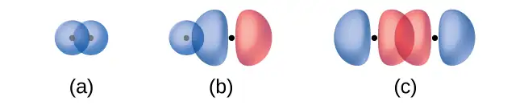
A pi bond (π bond) is a type of covalent bond that results from the side-by-side overlap of two p orbitals, as illustrated in Figure 8.5. In a π bond, the regions of orbital overlap lie on opposite sides of the internuclear axis. Along the axis itself, there is a node, that is, a plane with no probability of finding an electron.
While all single bonds are σ bonds, multiple bonds consist of both σ and π bonds. As the Lewis structures below suggest, O2 contains a double bond, and N2 contains a triple bond. The double bond consists of one σ bond and one π bond, and the triple bond consists of one σ bond and two π bonds. Between any two atoms, the first bond formed will always be a σ bond, but there can only be one σ bond in any one location. In any multiple bond, there will be one σ bond, and the remaining one or two bonds will be π bonds. These bonds are described in more detail later in this chapter.
![A diagram contains three Lewis structures. The left most structure shows an H atom bonded to a C l atom by a single bond. The C l atom has three lone pairs of electrons. The phrase “One sigma bond No pi bonds” is written below the drawing. The center structure shows two O atoms bonded by a double bond. The O atoms each have two lone pairs of electrons. The phrase “One sigma bond One pi bond” is written below the drawing. The right most structure shows two N atoms bonded by a triple bond. Each N atom has a lone pairs of electrons. The phrase “One sigma bond Two pi bonds” is written below the drawing.](img/cnx-chem-08-01-bondtype-img.webp)
As seen in Table 8.1, an average carbon-carbon single bond is 347 kJ/mol, while in a carbon-carbon double bond, the π bond increases the bond strength by 267 kJ/mol. Adding an additional π bond causes a further increase of 225 kJ/mol. We can see a similar pattern when we compare other σ and π bonds. Thus, each individual π bond is generally weaker than a corresponding σ bond between the same two atoms. In a σ bond, there is a greater degree of orbital overlap than in a π bond.
Example 8.1 Counting σ and π Bonds
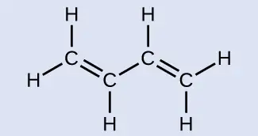
Butadiene, C4H6, is used to make synthetic rubber. Identify the number of σ and π bonds contained in this molecule.
Solution
There are six σ C–H bonds and one σ C–C bond, for a total of seven from the single bonds. There are two double bonds that each have a π bond in addition to the σ bond. This gives a total nine σ and two π bonds overall.
Check Your Learning
Identify each illustration as depicting a σ or π bond:
(a) side-by-side overlap of a 4p and a 2p orbital
(b) end-to-end overlap of a 4p and 4p orbital
(c) end-to-end overlap of a 4p and a 2p orbital
Answer:
(a) is a π bond with a node along the axis connecting the nuclei while (b) and (c) are σ bonds that overlap along the axis.
8.2 Hybrid Atomic Orbitals¶
Learning Objectives
By the end of this section, you will be able to:
- Explain the concept of atomic orbital hybridization
- Determine the hybrid orbitals associated with various molecular geometries
Thinking in terms of overlapping atomic orbitals is one way for us to explain how chemical bonds form in diatomic molecules. However, to understand how molecules with more than two atoms form stable bonds, we require a more detailed model. As an example, let us consider the water molecule, in which we have one oxygen atom bonding to two hydrogen atoms. Oxygen has the electron configuration 1s22s22p4, with two unpaired electrons (one in each of the two 2p orbitals). Valence bond theory would predict that the two O–H bonds form from the overlap of these two 2p orbitals with the 1s orbitals of the hydrogen atoms. If this were the case, the bond angle would be 90°, as shown in Figure 8.6, because p orbitals are perpendicular to each other. Experimental evidence shows that the bond angle is 104.5°, not 90°. The prediction of the valence bond theory model does not match the real-world observations of a water molecule; a different model is needed.
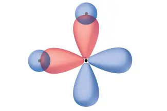
Quantum-mechanical calculations suggest why the observed bond angles in H2O differ from those predicted by the overlap of the 1s orbital of the hydrogen atoms with the 2p orbitals of the oxygen atom. The mathematical expression known as the wave function, ψ, contains information about each orbital and the wavelike properties of electrons in an isolated atom. When atoms are bound together in a molecule, the wave functions combine to produce new mathematical descriptions that have different shapes. This process of combining the wave functions for atomic orbitals is called hybridization and is mathematically accomplished by the linear combination of atomic orbitals, LCAO, (a technique that we will encounter again later). The new orbitals that result are called hybrid orbitals. The valence orbitals in an isolated oxygen atom are a 2s orbital and three 2p orbitals. The valence orbitals in an oxygen atom in a water molecule differ; they consist of four equivalent hybrid orbitals that point approximately toward the corners of a tetrahedron (Figure 8.7). Consequently, the overlap of the O and H orbitals should result in a tetrahedral bond angle (109.5°). The observed angle of 104.5° is experimental evidence for which quantum-mechanical calculations give a useful explanation: Valence bond theory must include a hybridization component to give accurate predictions.
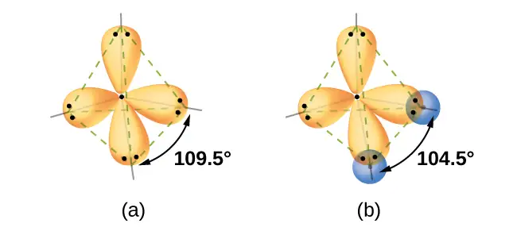
The following ideas are important in understanding hybridization:
- Hybrid orbitals do not exist in isolated atoms. They are formed only in covalently bonded atoms.
- Hybrid orbitals have shapes and orientations that are very different from those of the atomic orbitals in isolated atoms.
- A set of hybrid orbitals is generated by combining atomic orbitals. The number of hybrid orbitals in a set is equal to the number of atomic orbitals that were combined to produce the set.
- All orbitals in a set of hybrid orbitals are equivalent in shape and energy.
- The type of hybrid orbitals formed in a bonded atom depends on its electron-pair geometry as predicted by the VSEPR theory.
- Hybrid orbitals overlap to form σ bonds. Unhybridized orbitals overlap to form π bonds.
In the following sections, we shall discuss the common types of hybrid orbitals.
sp Hybridization¶
The beryllium atom in a gaseous BeCl2 molecule is an example of a central atom with no lone pairs of electrons in a linear arrangement of three atoms. There are two regions of valence electron density in the BeCl2 molecule that correspond to the two covalent Be–Cl bonds. To accommodate these two electron domains, two of the Be atom’s four valence orbitals will mix to yield two hybrid orbitals. This hybridization process involves mixing of the valence s orbital with one of the valence p orbitals to yield two equivalent sp hybrid orbitals that are oriented in a linear geometry (Figure 8.8). In this figure, the set of sp orbitals appears similar in shape to the original p orbital, but there is an important difference. The number of atomic orbitals combined always equals the number of hybrid orbitals formed. The p orbital is one orbital that can hold up to two electrons. The sp set is two equivalent orbitals that point 180° from each other. The two electrons that were originally in the s orbital are now distributed to the two sp orbitals, which are half filled. In gaseous BeCl2, these half-filled hybrid orbitals will overlap with orbitals from the chlorine atoms to form two identical σ bonds.
![A series of three diagrams connected by a right-facing arrow that is labeled, “Hybridization,” and a downward-facing arrow labeled, “Gives a linear arrangement,” are shown. The first diagram shows a blue spherical orbital and a red, peanut-shaped orbital, each placed on an X, Y, Z axis system. The second diagram shows the same two orbitals, but they are now purple and have one enlarged lobe and one smaller lobe. Each lies along the x-axis in the drawing. The third diagram shows the same two orbitals, but their smaller lobes now overlap along the x-axis while their larger lobes are located at and labeled as “180 degrees” from one another.](img/cnx-chem-08-02-spgeom.webp)
We illustrate the electronic differences in an isolated Be atom and in the bonded Be atom in the orbital energy-level diagram in Figure 8.9. These diagrams represent each orbital by a horizontal line (indicating its energy) and each electron by an arrow. Energy increases toward the top of the diagram. We use one upward arrow to indicate one electron in an orbital and two arrows (up and down) to indicate two electrons of opposite spin.
![A diagram is shown in two parts, connected by a right facing arrow labeled, “Hybridization.” The left diagram shows an up-facing arrow labeled, “E.” To the lower right of the arrow is a short, horizontal line labeled, “2 s,” that has two vertical half-arrows facing up and down on it. To the upper right of the arrow are a series of three short, horizontal lines labeled, “2 p.” Above these two sets of lines is the phrase, “Orbitals in an isolated B e atom.” The right side of the diagram shows two short, horizontal lines placed halfway up the space and each labeled, “s p.” An upward-facing half arrow is drawn vertically on each line. Above these lines are two other short, horizontal lines, each labeled, “2 p.” Above these two sets of lines is the phrase, “Orbitals in the s p hybridized B e in B e C l subscript 2.”](img/cnx-chem-08-02-spdiag.webp)
When atomic orbitals hybridize, the valence electrons occupy the newly created orbitals. The Be atom had two valence electrons, so each of the sp orbitals gets one of these electrons. Each of these electrons pairs up with the unpaired electron on a chlorine atom when a hybrid orbital and a chlorine orbital overlap during the formation of the Be–Cl bonds.
Any central atom surrounded by just two regions of valence electron density in a molecule will exhibit sp hybridization. Other examples include the mercury atom in the linear HgCl2 molecule, the zinc atom in Zn(CH3)2, which contains a linear C–Zn–C arrangement, and the carbon atoms in HCCH and CO2.
Link to Learning
Check out the University of Wisconsin-Oshkosh website to learn about visualizing hybrid orbitals in three dimensions.
sp2 Hybridization¶
The valence orbitals of a central atom surrounded by three regions of electron density consist of a set of three sp2 hybrid orbitals and one unhybridized p orbital. This arrangement results from sp2 hybridization, the mixing of one s orbital and two p orbitals to produce three identical hybrid orbitals oriented in a trigonal planar geometry (Figure 8.10).
![This shows a series of three diagrams with one on the left connected to one on the right by a right-facing arrow that is labeled, “Hybridization.” Below the one on the right is a downward-facing arrow labeled, “Gives a trigonal planar arrangement,” connecting to the last diagram. The first diagram shows a blue spherical orbital labeled “S” and then two red and blue, peanut-shaped orbitals, each placed on an X, Y, Z axis system, labeled “P subscript x” and “P subscript y.” The two red and blue orbitals are located on the x and z axes, respectively. The second diagram shows the three orbitals again on an X, Y, Z axis system, but they are yellow and have one enlarged lobe and one smaller lobe. Each lies in a different axis in the drawing. The third diagram shows the same three orbitals, but their smaller lobes now overlap while their larger lobes are located at and labeled as “120 degrees” from one another.](img/cnx-chem-08-02-sp2geom.webp)
Although quantum mechanics yields the “plump” orbital lobes as depicted in Figure 8.10, sometimes for clarity these orbitals are drawn thinner and without the minor lobes, as in Figure 8.11, to avoid obscuring other features of a given illustration. We will use these “thinner” representations whenever the true view is too crowded to easily visualize.
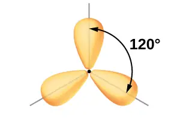
The observed structure of the borane molecule, BH3, suggests sp2 hybridization for boron in this compound. The molecule is trigonal planar, and the boron atom is involved in three bonds to hydrogen atoms (Figure 8.12). We can illustrate the comparison of orbitals and electron distribution in an isolated boron atom and in the bonded atom in BH3 as shown in the orbital energy level diagram in Figure 8.13. We redistribute the three valence electrons of the boron atom in the three sp2 hybrid orbitals, and each boron electron pairs with a hydrogen electron when B–H bonds form.
![A diagram is shown in two parts, connected by a right facing arrow labeled, “Hybridization.” The left diagram shows an up-facing arrow labeled “E.” To the lower right of the arrow is a short, horizontal line labeled, “2 s,” that has two vertical half-arrows facing up and down on it. To the upper right of the arrow are a series of three short, horizontal lines labeled, “2 p.” Above both sets of these lines is the phrase, “Orbitals in an isolated B atom.” One of the lines has a vertical, up-facing arrow drawn on it. The right side of the diagram shows three short, horizontal lines placed halfway up the space and each labeled, “s p superscript 2.” An upward-facing half arrow is drawn vertically on each line. Above these lines is one other short, horizontal line, labeled, “2 p.” Above both sets of lines is the phrase, “Orbitals in the s p superscript 2 hybridized B atom in B H subscript 3.”](img/cnx-chem-08-02-bh3diag.webp)
Any central atom surrounded by three regions of electron density will exhibit sp2 hybridization. This includes molecules with a lone pair on the central atom, such as ClNO (Figure 8.14), or molecules with two single bonds and a double bond connected to the central atom, as in formaldehyde, CH2O, and ethene, H2CCH2.
![Three Lewis structures are shown. The left-hand structure shows a chlorine atom surrounded by three lone pairs of electrons single bonded to a nitrogen atom with one lone pair of electrons and double bonded to an oxygen atom with two lone pairs of electrons. The middle structure shows a carbon atom single bonded to two hydrogen atoms and double bonded to an oxygen atom that has two lone pairs of electrons. The right-hand structure shows two carbon atoms, double bonded to one another and each single bonded to two hydrogen atoms.](img/cnx-chem-08-02-sp2ex.webp)
sp3 Hybridization¶
The valence orbitals of an atom surrounded by a tetrahedral arrangement of bonding pairs and lone pairs consist of a set of four sp3 hybrid orbitals. The hybrids result from the mixing of one s orbital and all three p orbitals that produces four identical sp3 hybrid orbitals (Figure 8.15). Each of these hybrid orbitals points toward a different corner of a tetrahedron.
![A series of three diagrams connected by a right-facing arrow that is labeled, “Hybridization,” and a downward-facing arrow labeled, “Gives a tetrahedral arrangement,” are shown. The first diagram shows a blue spherical orbital and three red, peanut-shaped orbitals, each placed on an x, y, z axis system. The three red orbitals are located on the x , y and z axes, respectively. The second diagram shows the same four orbitals, but they are now purple and have one enlarged lobe and one smaller lobe. Each lies in a different axis in the drawing. The third diagram shows the same four orbitals, but their smaller lobes now overlap to form a tetrahedral structure.](img/cnx-chem-08-02-sp3geom.webp)
A molecule of methane, CH4, consists of a carbon atom surrounded by four hydrogen atoms at the corners of a tetrahedron. The carbon atom in methane exhibits sp3 hybridization. We illustrate the orbitals and electron distribution in an isolated carbon atom and in the bonded atom in CH4 in Figure 8.16. The four valence electrons of the carbon atom are distributed equally in the hybrid orbitals, and each carbon electron pairs with a hydrogen electron when the C–H bonds form.
![A diagram is shown in two parts, connected by a right facing arrow labeled, “Hybridization.” The left diagram shows an up-facing arrow labeled “E.” To the lower right of the arrow is a short, horizontal line labeled, “2 s,” that has two vertical half-arrows facing up and down on it. To the upper right of the arrow are a series of three short, horizontal lines labeled, “2 p.” Two of the lines have a vertical, up-facing arrow drawn on them. Above both sets of lines is the phrase, “Orbitals in an isolated C atom.” The right side of the diagram shows four short, horizontal lines placed halfway up the space and each labeled, “s p superscript 3.” An upward-facing half arrow is drawn vertically on each line. Above these lines is the phrase, “Orbitals in the s p superscript 3 hybridized C atom in C H subscript 4.”](img/cnx-chem-08-02-sp3diag.webp)
In a methane molecule, the 1s orbital of each of the four hydrogen atoms overlaps with one of the four sp3 orbitals of the carbon atom to form a sigma (σ) bond. This results in the formation of four strong, equivalent covalent bonds between the carbon atom and each of the hydrogen atoms to produce the methane molecule, CH4.
The structure of ethane, C2H6, is similar to that of methane in that each carbon in ethane has four neighboring atoms arranged at the corners of a tetrahedron—three hydrogen atoms and one carbon atom (Figure 8.17). However, in ethane an sp3 orbital of one carbon atom overlaps end to end with an sp3 orbital of a second carbon atom to form a σ bond between the two carbon atoms. Each of the remaining sp3 hybrid orbitals overlaps with an s orbital of a hydrogen atom to form carbon–hydrogen σ bonds. The structure and overall outline of the bonding orbitals of ethane are shown in Figure 8.17. The orientation of the two CH3 groups is not fixed relative to each other. Experimental evidence shows that rotation around σ bonds occurs easily.
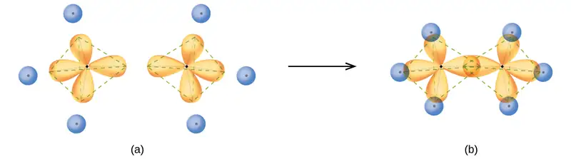
An sp3 hybrid orbital can also hold a lone pair of electrons. For example, the nitrogen atom in ammonia is surrounded by three bonding pairs and a lone pair of electrons directed to the four corners of a tetrahedron. The nitrogen atom is sp3 hybridized with one hybrid orbital occupied by the lone pair.
The molecular structure of water is consistent with a tetrahedral arrangement of two lone pairs and two bonding pairs of electrons. Thus we say that the oxygen atom is sp3 hybridized, with two of the hybrid orbitals occupied by lone pairs and two by bonding pairs. Since lone pairs occupy more space than bonding pairs, structures that contain lone pairs have bond angles slightly distorted from the ideal. Perfect tetrahedra have angles of 109.5°, but the observed angles in ammonia (107.3°) and water (104.5°) are slightly smaller. Other examples of sp3 hybridization include CCl4, PCl3, and NCl3.
sp3d and sp3d2 Hybridization¶
To describe the five bonding orbitals in a trigonal bipyramidal arrangement, we must use five of the valence shell atomic orbitals (the s orbital, the three p orbitals, and one of the d orbitals), which gives five sp3d hybrid orbitals. With an octahedral arrangement of six hybrid orbitals, we must use six valence shell atomic orbitals (the s orbital, the three p orbitals, and two of the d orbitals in its valence shell), which gives six sp3d2 hybrid orbitals. These hybridizations are only possible for atoms that have d orbitals in their valence subshells (that is, not those in the first or second period).
In a molecule of phosphorus pentachloride, PCl5, there are five P–Cl bonds (thus five pairs of valence electrons around the phosphorus atom) directed toward the corners of a trigonal bipyramid. We use the 3s orbital, the three 3p orbitals, and one of the 3d orbitals to form the set of five sp3d hybrid orbitals (Figure 8.19) that are involved in the P–Cl bonds. Other atoms that exhibit sp3d hybridization include the sulfur atom in SF4 and the chlorine atoms in ClF3 and in \(\text{ClF}_{4}{}^{\text{+}}.\) (The electrons on fluorine atoms are omitted for clarity.)
![Three Lewis structures are shown along with designations of molecular shape. The left image shows a sulfur atom singly bonded to four fluorine atoms. The sulfur atom has one lone pair of electrons while each fluorine has three. Two fluorine atoms are drawn vertically up and down from the sulfur while the other two are shown going into and out of the page. The second structure shows one chlorine atom singly bonded to three fluorine atoms. The chlorine has two lone pairs of electrons while each fluorine has three. Two fluorine atoms are drawn vertically up and down from the sulfur while the other is shown horizontally. The right structure shows a chlorine atom singly bonded to four fluorine atoms. The chlorine atom has one lone pair of electrons and a superscript plus sign, while each fluorine has three lone pairs of electrons. Two fluorine atoms are drawn vertically up and down from the sulfur while the other two are shown going into and out of the page.](img/cnx-chem-08-02-sp3d-img.webp)
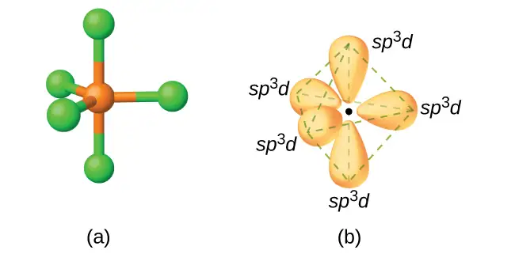
The sulfur atom in sulfur hexafluoride, SF6, exhibits sp3d2 hybridization. A molecule of sulfur hexafluoride has six bonding pairs of electrons connecting six fluorine atoms to a single sulfur atom. There are no lone pairs of electrons on the central atom. To bond six fluorine atoms, the 3s orbital, the three 3p orbitals, and two of the 3d orbitals form six equivalent sp3d2 hybrid orbitals, each directed toward a different corner of an octahedron. Other atoms that exhibit sp3d2 hybridization include the phosphorus atom in \(\text{PCl}_{6}{}^{-},\) the iodine atom in the interhalogens \(\text{IF}_{6}{}^{\text{+}},\) IF5, \(\text{ICl}_{4}{}^{-},\) \(\text{IF}_{4}{}^{-}\) and the xenon atom in XeF4.
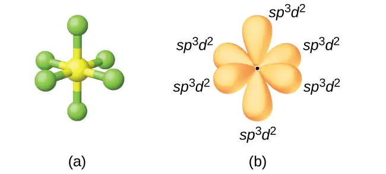
Assignment of Hybrid Orbitals to Central Atoms¶
The hybridization of an atom is determined based on the number of regions of electron density that surround it. The geometrical arrangements characteristic of the various sets of hybrid orbitals are shown in Figure 8.21. These arrangements are identical to those of the electron-pair geometries predicted by VSEPR theory. VSEPR theory predicts the shapes of molecules, and hybrid orbital theory provides an explanation for how those shapes are formed. To find the hybridization of a central atom, we can use the following guidelines:
- Determine the Lewis structure of the molecule.
- Determine the number of regions of electron density around an atom using VSEPR theory, in which single bonds, multiple bonds, radicals, and lone pairs each count as one region.
- Assign the set of hybridized orbitals from Figure 8.21 that corresponds to this geometry.
![A table is shown that is composed of five columns and six rows. The header row contains the phrases, “Regions of electron density,” “Arrangement,” (which has two columns below it), and “Hybridization,” (which has two columns below it). The first column contains the numbers “2,” “3,” “4,” “5,” and “6.” The second column contains images of a line, a triangle, a three sided pyramid, a trigonal bipyramid, and an eight-faced ocatahedron. The third column contains the terms, “Linear,” “Trigonal planar,” “Tetrahedral,” “Trigonal bipyramidal,” and “Octahedral.” The fourth column contains the terms “s p,” “s p superscript 2,” “s p superscript 3,” “s p superscript 3 d,” and “s p superscript 3 d superscript 2.” The last column contains drawings of the molecules beginning with a peanut-shaped structure marked with an angle of “180 degrees.” The second structure is made up of three equal-sized, rounded structures connected at one point with an angle of “120 degrees,” while the third structure is a three-dimensional arrangement of four equal-sized, rounded structures labeled as “109.5 degrees.” The fourth structure is made up of five equal-sized, rounded structures connected at “120 and 90 degrees,” while the fifth structure has six equal-sized, rounded structures connected at “90 degrees.”](img/cnx-chem-08-02-hybrdorbit.webp)
It is important to remember that hybridization was devised to rationalize experimentally observed molecular geometries. The model works well for molecules containing small central atoms, in which the valence electron pairs are close together in space. However, for larger central atoms, the valence-shell electron pairs are farther from the nucleus, and there are fewer repulsions. Their compounds exhibit structures that are often not consistent with VSEPR theory, and hybridized orbitals are not necessary to explain the observed data. For example, we have discussed the H–O–H bond angle in H2O, 104.5°, which is more consistent with sp3 hybrid orbitals (109.5°) on the central atom than with 2p orbitals (90°). Sulfur is in the same group as oxygen, and H2S has a similar Lewis structure. However, it has a much smaller bond angle (92.1°), which indicates much less hybridization on sulfur than oxygen. Continuing down the group, tellurium is even larger than sulfur, and for H2Te, the observed bond angle (90°) is consistent with overlap of the 5p orbitals, without invoking hybridization. We invoke hybridization where it is necessary to explain the observed structures.
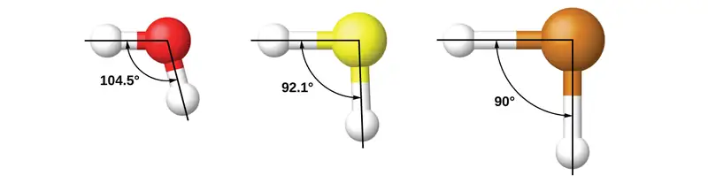
Example 8.2 Assigning Hybridization
Ammonium sulfate is important as a fertilizer. What is the hybridization of the sulfur atom in the sulfate ion, \(\text{SO}_{4}{}^{\text{2−}}?\)
Solution
The Lewis structure of sulfate shows there are four regions of electron density. The hybridization is sp3.
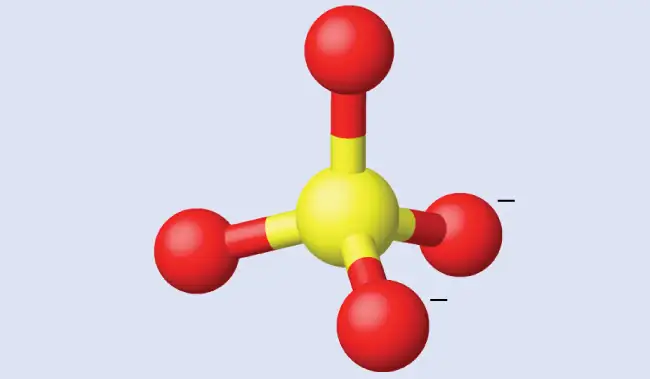
Check Your Learning
What is the hybridization of the selenium atom in SeF4?
Answer:
The selenium atom is sp3d hybridized.
Example 8.3 Assigning Hybridization
Urea, NH2C(O)NH2, is sometimes used as a source of nitrogen in fertilizers. What is the hybridization of the carbon atom in urea?
Solution
The Lewis structure of urea is
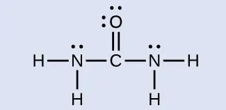
The carbon atom is surrounded by three regions of electron density, positioned in a trigonal planar arrangement. The hybridization in a trigonal planar electron pair geometry is sp2 (Figure 8.21), which is the hybridization of the carbon atom in urea.
Check Your Learning
Acetic acid, H3CC(O)OH, is the molecule that gives vinegar its odor and sour taste. What is the hybridization of the two carbon atoms in acetic acid?
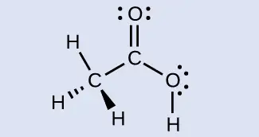
Answer:
H3C, sp3; C(O)OH, sp2
8.3 Multiple Bonds¶
Learning Objectives
By the end of this section, you will be able to:
- Describe multiple covalent bonding in terms of atomic orbital overlap
- Relate the concept of resonance to π-bonding and electron delocalization
The hybrid orbital model appears to account well for the geometry of molecules involving single covalent bonds. Is it also capable of describing molecules containing double and triple bonds? We have already discussed that multiple bonds consist of σ and π bonds. Next we can consider how we visualize these components and how they relate to hybrid orbitals. The Lewis structure of ethene, C2H4, shows us that each carbon atom is surrounded by one other carbon atom and two hydrogen atoms.
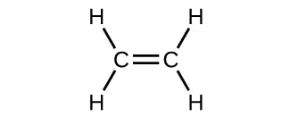
The three bonding regions form a trigonal planar electron-pair geometry. Thus we expect the σ bonds from each carbon atom are formed using a set of sp2 hybrid orbitals that result from hybridization of two of the 2p orbitals and the 2s orbital (Figure 8.22). These orbitals form the C–H single bonds and the σ bond in the \(\text{C}=\text{C}\) double bond (Figure 8.23). The π bond in the \(\text{C}=\text{C}\) double bond results from the overlap of the third (remaining) 2p orbital on each carbon atom that is not involved in hybridization. This unhybridized p orbital (lobes shown in red and blue in Figure 8.23) is perpendicular to the plane of the sp2 hybrid orbitals. Thus the unhybridized 2p orbitals overlap in a side-by-side fashion, above and below the internuclear axis (Figure 8.23) and form a π bond.
![A diagram is shown in two parts, connected by a right facing arrow labeled, “Hybridization.” The left diagram shows an up-facing arrow labeled, “E.” To the lower right of the arrow is a short, horizontal line labeled, “2 s,” that has two vertical half-arrows facing up and down on it. To the upper right of the arrow are a series of three short, horizontal lines labeled, “2 p.” Above both sets of lines is the phrase, “Orbitals in an isolated C atom.” Two of the lines have vertical, up-facing arrows drawn on them. The right side of the diagram shows three short, horizontal lines placed halfway up the space and each labeled, “s p superscript 2.” An upward-facing half arrow is drawn vertically on each line. Above these lines is one other short, horizontal line, labeled, “p.” Above both sets of lines is the phrase, “Orbitals in the s p superscript 2 hybridized C atom in C subscript 2 H subscript 4.”](img/cnx-chem-08-03-sp3config.webp)
![Two diagrams are shown labeled, “a” and “b.” Diagram a shows two carbon atoms with three purple balloon-like orbitals arranged in a plane around them and two red balloon-like orbitals arranged vertically and perpendicularly to the plane. There is an overlap of two of the purple orbitals in between the two carbon atoms, and the other four purple orbitals that face the outside of the molecule are shown interacting with spherical blue orbitals from four hydrogen atoms. Diagram b depicts a similar image to diagram a, but the red, vertical orbitals are interacting above and below the plane of the molecule to form two areas labeled, “One pi bond.”](img/cnx-chem-08-03-c2h4orbit.webp)
In an ethene molecule, the four hydrogen atoms and the two carbon atoms are all in the same plane. If the two planes of sp2 hybrid orbitals tilted relative to each other, the p orbitals would not be oriented to overlap efficiently to create the π bond. The planar configuration for the ethene molecule occurs because it is the most stable bonding arrangement. This is a significant difference between σ and π bonds; rotation around single (σ) bonds occurs easily because the end-to-end orbital overlap does not depend on the relative orientation of the orbitals on each atom in the bond. In other words, rotation around the internuclear axis does not change the extent to which the σ bonding orbitals overlap because the bonding electron density is symmetric about the axis. Rotation about the internuclear axis is much more difficult for multiple bonds since this would drastically decrease the off-axis overlap of the π bonding orbitals, essentially breaking the π bond.
In molecules with sp hybrid orbitals, two unhybridized p orbitals remain on the atom (Figure 8.24). We find this situation in acetylene, \(\text{H−C≡C−H},\) which is a linear molecule. The sp hybrid orbitals of the two carbon atoms overlap end to end to form a σ bond between the carbon atoms (Figure 8.25). The remaining sp orbitals form σ bonds with hydrogen atoms. The two unhybridized p orbitals per carbon are positioned such that they overlap side by side and, hence, form two π bonds. The two carbon atoms of acetylene are thus bound together by one σ bond and two π bonds, giving a triple bond.
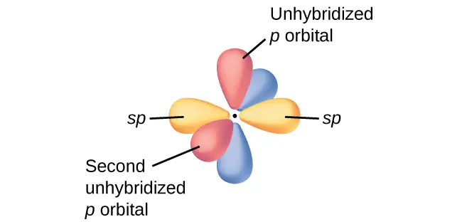
![Two diagrams are shown and labeled, “a” and “b.” Diagram a shows two carbon atoms with two purple balloon-like orbitals arranged in a plane around each of them, and four red balloon-like orbitals arranged along the y and z axes perpendicular to the plane of the molecule. There is an overlap of two of the purple orbitals in between the two carbon atoms. The other two purple orbitals that face the outside of the molecule are shown interacting with spherical blue orbitals from two hydrogen atoms. Diagram b depicts a similar image to diagram a, but the red, vertical orbitals are interacting above and below and to the front and back of the plane of the molecule to form two areas labeled, “One pi bond,” and, “Second pi bond,” each respectively.](img/cnx-chem-08-03-c2h2.webp)
Hybridization involves only σ bonds, lone pairs of electrons, and single unpaired electrons (radicals). Structures that account for these features describe the correct hybridization of the atoms. However, many structures also include resonance forms. Remember that resonance forms occur when various arrangements of π bonds are possible. Since the arrangement of π bonds involves only the unhybridized orbitals, resonance does not influence the assignment of hybridization.
For example, molecule benzene has two resonance forms (Figure 8.26). We can use either of these forms to determine that each of the carbon atoms is bonded to three other atoms with no lone pairs, so the correct hybridization is sp2. The electrons in the unhybridized p orbitals form π bonds. Neither resonance structure completely describes the electrons in the π bonds. They are not located in one position or the other, but in reality are delocalized throughout the ring. Valence bond theory does not easily address delocalization. Bonding in molecules with resonance forms is better described by molecular orbital theory. (See the next module.)
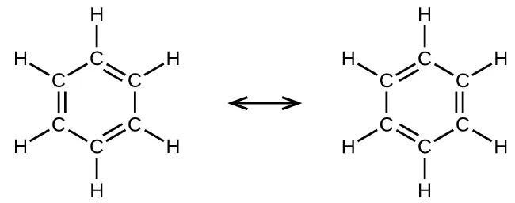
Example 8.4 Assignment of Hybridization Involving Resonance
Some acid rain results from the reaction of sulfur dioxide with atmospheric water vapor, followed by the formation of sulfuric acid. Sulfur dioxide, SO2, is a major component of volcanic gases as well as a product of the combustion of sulfur-containing coal. What is the hybridization of the S atom in SO2?
Solution
The resonance structures of SO2 are
![Two Lewis structures connected by a double-ended arrow are shown. The left structure shows a sulfur atom with one lone pair of electrons and a positive sign which is single bonded on one side to an oxygen atom with three lone pairs of electrons and a negative sign. The sulfur atom is double bonded on the other side to another oxygen atom with two lone pairs of electrons. The right-hand structure is the same as the left except that the position of the double bonded oxygen atom is switched. In both structures the attached oxygen atoms form an acute angle in terms of the sulfur atom.](img/cnx-chem-08-03-so2-img.webp)
The sulfur atom is surrounded by two bonds and one lone pair of electrons in either resonance structure. Therefore, the electron-pair geometry is trigonal planar, and the hybridization of the sulfur atom is sp2.
Check Your Learning
Another acid in acid rain is nitric acid, HNO3, which is produced by the reaction of nitrogen dioxide, NO2, with atmospheric water vapor. What is the hybridization of the nitrogen atom in NO2? (Note: the lone electron on nitrogen occupies a hybridized orbital just as a lone pair would.)
Answer:
sp2
8.4 Molecular Orbital Theory¶
Learning Objectives
By the end of this section, you will be able to:
- Outline the basic quantum-mechanical approach to deriving molecular orbitals from atomic orbitals
- Describe traits of bonding and antibonding molecular orbitals
- Calculate bond orders based on molecular electron configurations
- Write molecular electron configurations for first- and second-row diatomic molecules
- Relate these electron configurations to the molecules’ stabilities and magnetic properties
For almost every covalent molecule that exists, we can now draw the Lewis structure, predict the electron-pair geometry, predict the molecular geometry, and come close to predicting bond angles. However, one of the most important molecules we know, the oxygen molecule O2, presents a problem with respect to its Lewis structure. We would write the following Lewis structure for O2:
This electronic structure adheres to all the rules governing Lewis theory. There is an O=O double bond, and each oxygen atom has eight electrons around it. However, this picture is at odds with the magnetic behavior of oxygen. By itself, O2 is not magnetic, but it is attracted to magnetic fields. Thus, when we pour liquid oxygen past a strong magnet, it collects between the poles of the magnet and defies gravity, as in Figure 8.1. Such attraction to a magnetic field is called paramagnetism, and it arises in molecules that have unpaired electrons. And yet, the Lewis structure of O2 indicates that all electrons are paired. How do we account for this discrepancy?
Magnetic susceptibility measures the force experienced by a substance in a magnetic field. When we compare the weight of a sample to the weight measured in a magnetic field (Figure 8.27), paramagnetic samples that are attracted to the magnet will appear heavier because of the force exerted by the magnetic field. We can calculate the number of unpaired electrons based on the increase in weight.
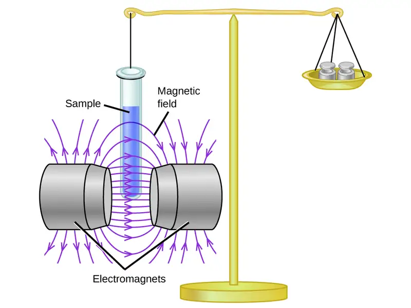
Experiments show that each O2 molecule has two unpaired electrons. The Lewis-structure model does not predict the presence of these two unpaired electrons. Unlike oxygen, the apparent weight of most molecules decreases slightly in the presence of an inhomogeneous magnetic field. Materials in which all of the electrons are paired are diamagnetic and weakly repel a magnetic field. Paramagnetic and diamagnetic materials do not act as permanent magnets. Only in the presence of an applied magnetic field do they demonstrate attraction or repulsion.
Link to Learning
View this brief video to see several demonstrations of paramagnetic and diamagnetic behavior.
Molecular orbital theory (MO theory) provides an explanation of chemical bonding that accounts for the paramagnetism of the oxygen molecule. It also explains the bonding in a number of other molecules, such as violations of the octet rule and more molecules with more complicated bonding (beyond the scope of this text) that are difficult to describe with Lewis structures. Additionally, it provides a model for describing the energies of electrons in a molecule and the probable location of these electrons. Unlike valence bond theory, which uses hybrid orbitals that are assigned to one specific atom, MO theory uses the combination of atomic orbitals to yield molecular orbitals that are delocalized over the entire molecule rather than being localized on its constituent atoms. MO theory also helps us understand why some substances are electrical conductors, others are semiconductors, and still others are insulators. Table 8.2 summarizes the main points of the two complementary bonding theories. Both theories provide different, useful ways of describing molecular structure.
Table 8.2
| Comparison of Bonding Theories | |
|---|---|
| Valence Bond Theory | Molecular Orbital Theory |
| considers bonds as localized between one pair of atoms | considers electrons delocalized throughout the entire molecule |
| creates bonds from overlap of atomic orbitals (s, p, d…) and hybrid orbitals (sp, sp2, sp3…) | combines atomic orbitals to form molecular orbitals (σ, σ*, π, π*) |
| forms σ or π bonds | creates bonding and antibonding interactions based on which orbitals are filled |
| predicts molecular shape based on the number of regions of electron density | predicts the arrangement of electrons in molecules |
| needs multiple structures to describe resonance | |
Molecular orbital theory describes the distribution of electrons in molecules in much the same way that the distribution of electrons in atoms is described using atomic orbitals. Using quantum mechanics, the behavior of an electron in a molecule is still described by a wave function, Ψ, analogous to the behavior in an atom. Just like electrons around isolated atoms, electrons around atoms in molecules are limited to discrete (quantized) energies. The region of space in which a valence electron in a molecule is likely to be found is called a molecular orbital (Ψ2). Like an atomic orbital, a molecular orbital is full when it contains two electrons with opposite spin.
We will consider the molecular orbitals in molecules composed of two identical atoms (H2 or Cl2, for example). Such molecules are called homonuclear diatomic molecules. In these diatomic molecules, several types of molecular orbitals occur.
The mathematical process of combining atomic orbitals to generate molecular orbitals is called the linear combination of atomic orbitals (LCAO). The wave function describes the wavelike properties of an electron. Molecular orbitals are combinations of atomic orbital wave functions. Combining waves can lead to constructive interference, in which peaks line up with peaks, or destructive interference, in which peaks line up with troughs (Figure 8.28). In orbitals, the waves are three dimensional, and they combine with in-phase waves producing regions with a higher probability of electron density and out-of-phase waves producing nodes, or regions of no electron density.
![A pair of diagrams are shown and labeled, “a” and “b.” Diagram a shows two identical waves with two crests and two troughs. They are drawn one above the other with a plus sign in between and an equal sign to the right. To the right of the equal sign is a much taller wave with a same number of troughs and crests. Diagram b shows two waves with two crests and two troughs, but they are mirror images of one another rotated over a horizontal axis. They are drawn one above the other with a plus sign in between and an equal sign to the right. To the right of the equal sign is a flat line.](img/cnx-chem-08-04-waveadd.webp)
There are two types of molecular orbitals that can form from the overlap of two atomic s orbitals on adjacent atoms. The two types are illustrated in Figure 8.29. The in-phase combination produces a lower energy σs molecular orbital (read as "sigma-s") in which most of the electron density is directly between the nuclei. The out-of-phase addition (which can also be thought of as subtracting the wave functions) produces a higher energy \(\sigma_{s}^{*}\) molecular orbital (read as "sigma-s-star") molecular orbital in which there is a node between the nuclei. The asterisk signifies that the orbital is an antibonding orbital. Electrons in a σs orbital are attracted by both nuclei at the same time and are more stable (of lower energy) than they would be in the isolated atoms. Adding electrons to these orbitals creates a force that holds the two nuclei together, so we call these orbitals bonding orbitals. Electrons in the \(\sigma_{s}^{*}\) orbitals are located well away from the region between the two nuclei. The attractive force between the nuclei and these electrons pulls the two nuclei apart. Hence, these orbitals are called antibonding orbitals. Electrons fill the lower-energy bonding orbital before the higher-energy antibonding orbital, just as they fill lower-energy atomic orbitals before they fill higher-energy atomic orbitals.
![A diagram is shown that depicts a vertical upward-facing arrow that lies to the left of all the other portions of the diagram and is labeled, “E.” To the immediate right of the midpoint of the arrow are two circles each labeled with a positive sign, the letter S, and the phrase, “Atomic orbitals.” These are followed by a right-facing horizontal arrow that points to the same two circles labeled with plus signs, but they are now touching and are labeled, “Combine atomic orbitals.” Two right-facing arrows lead to the last portion of the diagram, one facing upward and one facing downward. The upper arrow is labeled, “Subtract,” and points to two oblong ovals labeled with plus signs, and the phrase, “Antibonding orbitals sigma subscript s superscript asterisk.” The lower arrow is labeled, “Add,” and points to an elongated oval with two plus signs that is labeled, “Bonding orbital sigma subscript s.” The heading over the last section of the diagram are the words, “Molecular orbitals.”](img/cnx-chem-08-04-ssigma.webp)
Link to Learning
You can watch animations visualizing the calculated atomic orbitals combining to form various molecular orbitals at the Orbitron website.
In p orbitals, the wave function gives rise to two lobes with opposite phases, analogous to how a two-dimensional wave has both parts above and below the average. We indicate the phases by shading the orbital lobes different colors. When orbital lobes of the same phase overlap, constructive wave interference increases the electron density. When regions of opposite phase overlap, the destructive wave interference decreases electron density and creates nodes. When p orbitals overlap end to end, they create σ and σ* orbitals (Figure 8.30). If two atoms are located along the x-axis in a Cartesian coordinate system, the two px orbitals overlap end to end and form σpx (bonding) and \(\sigma_{px}^{*}\) (antibonding) (read as "sigma-p-x" and "sigma-p-x star," respectively). Just as with s-orbital overlap, the asterisk indicates the orbital with a node between the nuclei, which is a higher-energy, antibonding orbital.
![Two horizontal rows of diagrams are shown. The upper diagram shows two equally-sized peanut-shaped orbitals with a plus sign in between them connected to a merged orbital diagram by a right facing arrow. The merged diagram has a much larger oval at the center and much smaller ovular orbitals on the edge. It is labeled, “sigma subscript p x.” The lower diagram shows two equally-sized peanut-shaped orbitals with a plus sign in between them connected to a split orbital diagram by a right facing arrow. The split diagram has a much larger oval at the outer ends and much smaller ovular orbitals on the inner edges. It is labeled, “sigma subscript p x superscript asterisk”.](img/cnx-chem-08-04-pmosigma.webp)
The side-by-side overlap of two p orbitals gives rise to a pi (π) bonding molecular orbital and a π* antibonding molecular orbital, as shown in Figure 8.31. In valence bond theory, we describe π bonds as containing a nodal plane containing the internuclear axis and perpendicular to the lobes of the p orbitals, with electron density on either side of the node. In molecular orbital theory, we describe the π orbital by this same shape, and a π bond exists when this orbital contains electrons. Electrons in this orbital interact with both nuclei and help hold the two atoms together, making it a bonding orbital. For the out-of-phase combination, there are two nodal planes created, one along the internuclear axis and a perpendicular one between the nuclei.
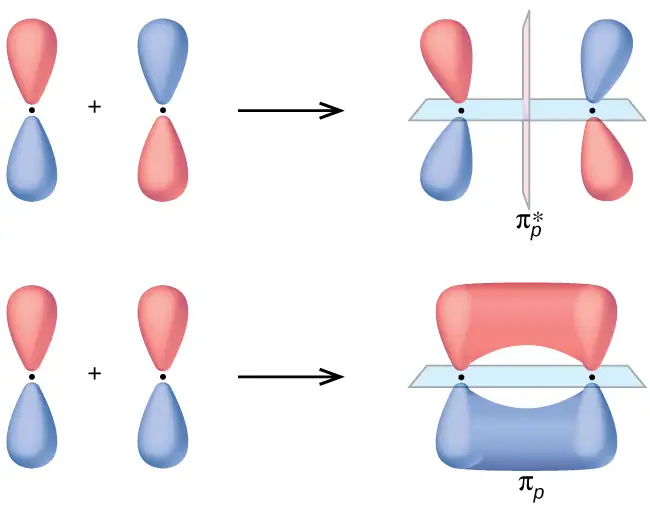
In the molecular orbitals of diatomic molecules, each atom also has two sets of p orbitals oriented side by side (py and pz), so these four atomic orbitals combine pairwise to create two π orbitals and two π* orbitals. The πpy and \(\pi_{py}^{*}\) orbitals are oriented at right angles to the πpz and \(\pi_{pz}^{*}\) orbitals. Except for their orientation, the πpy and πpz orbitals are identical and have the same energy; they are degenerate orbitals. The \(\pi_{py}^{*}\) and \(\pi_{pz}^{*}\) antibonding orbitals are also degenerate and identical except for their orientation. A total of six molecular orbitals results from the combination of the six atomic p orbitals in two atoms: σpx and \(\sigma_{px}^{*},\) πpy and \(\pi_{py}^{*},\) πpz and \(\pi_{pz}^{*}.\)
Example 8.5 Molecular Orbitals
Predict what type (if any) of molecular orbital would result from adding the wave functions so each pair of orbitals shown overlap. The orbitals are all similar in energy.
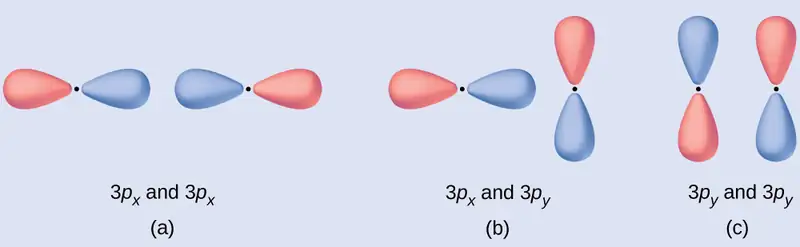
Solution
(a) is an in-phase combination, resulting in a σ3p orbital
(b) will not result in a new orbital because the in-phase component (bottom) and out-of-phase component (top) cancel out. Only orbitals with the correct alignment can combine.
(c) is an out-of-phase combination, resulting in a \(\pi_{3p}^{*}\) orbital.
Check Your Learning
Label the molecular orbital shown as σ or π, bonding or antibonding and indicate where the node occurs.
Answer:
The orbital is located along the internuclear axis, so it is a σ orbital. There is a node bisecting the internuclear axis, so it is an antibonding orbital.
Portrait of a Chemist: Walter Kohn: Nobel Laureate
Walter Kohn (Figure 8.32) is a theoretical physicist who studies the electronic structure of solids. His work combines the principles of quantum mechanics with advanced mathematical techniques. This technique, called density functional theory, makes it possible to compute properties of molecular orbitals, including their shape and energies. Kohn and mathematician John Pople were awarded the Nobel Prize in Chemistry in 1998 for their contributions to our understanding of electronic structure. Kohn also made significant contributions to the physics of semiconductors.
Kohn’s biography has been remarkable outside the realm of physical chemistry as well. He was born in Austria, and during World War II he was part of the Kindertransport program that rescued 10,000 children from the Nazi regime. His summer jobs included discovering gold deposits in Canada and helping Polaroid explain how its instant film worked. Dr. Kohn passed away in 2016 at the age of 93.
How Sciences Interconnect: Computational Chemistry in Drug Design
While the descriptions of bonding described in this chapter involve many theoretical concepts, they also have many practical, real-world applications. For example, drug design is an important field that uses our understanding of chemical bonding to develop pharmaceuticals. This interdisciplinary area of study uses biology (understanding diseases and how they operate) to identify specific targets, such as a binding site that is involved in a disease pathway. By modeling the structures of the binding site and potential drugs, computational chemists can predict which structures can fit together and how effectively they will bind (see Figure 8.33). Thousands of potential candidates can be narrowed down to a few of the most promising candidates. These candidate molecules are then carefully tested to determine side effects, how effectively they can be transported through the body, and other factors. Dozens of important new pharmaceuticals have been discovered with the aid of computational chemistry, and new research projects are underway.
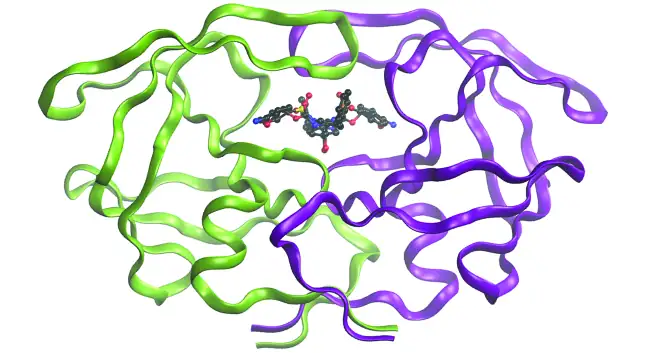
Molecular Orbital Energy Diagrams¶
The relative energy levels of atomic and molecular orbitals are typically shown in a molecular orbital diagram (Figure 8.34). For a diatomic molecule, the atomic orbitals of one atom are shown on the left, and those of the other atom are shown on the right. Each horizontal line represents one orbital that can hold two electrons. The molecular orbitals formed by the combination of the atomic orbitals are shown in the center. Dashed lines show which of the atomic orbitals combine to form the molecular orbitals. For each pair of atomic orbitals that combine, one lower-energy (bonding) molecular orbital and one higher-energy (antibonding) orbital result. Thus we can see that combining the six 2p atomic orbitals results in three bonding orbitals (one σ and two π) and three antibonding orbitals (one σ* and two π*).
We predict the distribution of electrons in these molecular orbitals by filling the orbitals in the same way that we fill atomic orbitals, by the Aufbau principle. Lower-energy orbitals fill first, electrons spread out among degenerate orbitals before pairing, and each orbital can hold a maximum of two electrons with opposite spins (Figure 8.34). Just as we write electron configurations for atoms, we can write the molecular electronic configuration by listing the orbitals with superscripts indicating the number of electrons present. For clarity, we place parentheses around molecular orbitals with the same energy. In this case, each orbital is at a different energy, so parentheses separate each orbital. Thus we would expect a diatomic molecule or ion containing seven electrons (such as \(\text{Be}_{2}{}^{\text{+}})\) would have the molecular electron configuration \({(\sigma_{1s})}^{2}{(\sigma_{1s}^{*})}^{2}{(\sigma_{2s})}^{2}{(\sigma_{2s}^{*})}^{1}.\) It is common to omit the core electrons from molecular orbital diagrams and configurations and include only the valence electrons.
![A diagram is shown that has an upward-facing vertical arrow running along the left side labeled, “E.” At the bottom center of the diagram is a horizontal line labeled, “sigma subscript 2 s,” that has two vertical half arrows drawn on it, one facing up and one facing down. This line is connected to the right and left by upward-facing, dotted lines to two more horizontal lines, each labeled, “2 s.” The line on the left has two vertical half arrows drawn on it, one facing up and one facing down while the line of the right has one half arrow facing up drawn on it. These two lines are connected by upward-facing dotted lines to another line in the center of the diagram, but further up from the first. It is labeled, “sigma subscript 2 s superscript asterisk.” This horizontal line has one upward-facing vertical half-arrow drawn on it. The left and right sides of the diagram have headers that read, ”Atomic orbitals,” while the center is header reads “Molecular orbitals”.](img/cnx-chem-08-04-fillmo.webp)
Bond Order¶
The filled molecular orbital diagram shows the number of electrons in both bonding and antibonding molecular orbitals. The net contribution of the electrons to the bond strength of a molecule is identified by determining the bond order that results from the filling of the molecular orbitals by electrons.
When using Lewis structures to describe the distribution of electrons in molecules, we define bond order as the number of bonding pairs of electrons between two atoms. Thus a single bond has a bond order of 1, a double bond has a bond order of 2, and a triple bond has a bond order of 3. We define bond order differently when we use the molecular orbital description of the distribution of electrons, but the resulting bond order is usually the same. The MO technique is more accurate and can handle cases when the Lewis structure method fails, but both methods describe the same phenomenon.
In the molecular orbital model, an electron contributes to a bonding interaction if it occupies a bonding orbital and it contributes to an antibonding interaction if it occupies an antibonding orbital. The bond order is calculated by subtracting the destabilizing (antibonding) electrons from the stabilizing (bonding) electrons. Since a bond consists of two electrons, we divide by two to get the bond order. We can determine bond order with the following equation:
The order of a covalent bond is a guide to its strength; a bond between two given atoms becomes stronger as the bond order increases (Table 8.1). If the distribution of electrons in the molecular orbitals between two atoms is such that the resulting bond would have a bond order of zero, a stable bond does not form. We next look at some specific examples of MO diagrams and bond orders.
Bonding in Diatomic Molecules¶
A dihydrogen molecule (H2) forms from two hydrogen atoms. When the atomic orbitals of the two atoms combine, the electrons occupy the molecular orbital of lowest energy, the σ1s bonding orbital. A dihydrogen molecule, H2, readily forms because the energy of a H2 molecule is lower than that of two H atoms. The σ1s orbital that contains both electrons is lower in energy than either of the two 1s atomic orbitals.
A molecular orbital can hold two electrons, so both electrons in the H2 molecule are in the σ1s bonding orbital; the electron configuration is \({(\sigma_{1s})}^{2}.\) We represent this configuration by a molecular orbital energy diagram (Figure 8.35) in which a single upward arrow indicates one electron in an orbital, and two (upward and downward) arrows indicate two electrons of opposite spin.
![A diagram is shown that has an upward-facing vertical arrow running along the left side labeled “E.” At the bottom center of the diagram is a horizontal line labeled, “sigma subscript 1 s,” that has two vertical half arrows drawn on it, one facing up and one facing down. This line is connected to the right and left by upward-facing, dotted lines to two more horizontal lines, each labeled, “1 s,” and each with one vertical half-arrow facing up drawn on it. These two lines are connected by upward-facing dotted lines to another line in the center of the diagram, but farther up from the first, and labeled, “sigma subscript 1 s superscript asterisk.” The left and right sides of the diagram have headers that read, ”Atomic orbitals,” while the center header reads, “Molecular orbitals.” The bottom left and right are labeled “H” while the center is labeled “H subscript 2.”](img/cnx-chem-08-04-h2mo-a7a1.webp)
A dihydrogen molecule contains two bonding electrons and no antibonding electrons so we have
Because the bond order for the H–H bond is equal to 1, the bond is a single bond.
A helium atom has two electrons, both of which are in its 1s orbital. Two helium atoms do not combine to form a dihelium molecule, He2, with four electrons, because the stabilizing effect of the two electrons in the lower-energy bonding orbital would be offset by the destabilizing effect of the two electrons in the higher-energy antibonding molecular orbital. We would write the hypothetical electron configuration of He2 as \({(\sigma_{1s})}^{2}{(\sigma_{1s}^{*})}^{2}\) as in Figure 8.36. The net energy change would be zero, so there is no driving force for helium atoms to form the diatomic molecule. In fact, helium exists as discrete atoms rather than as diatomic molecules. The bond order in a hypothetical dihelium molecule would be zero.
A bond order of zero indicates that no bond is formed between two atoms.
![A diagram is shown that has an upward-facing vertical arrow running along the left side labeled, “E.” At the bottom center of the diagram is a horizontal line labeled, “sigma subscript 1 s,” that has two vertical half arrows drawn on it, one facing up and one facing down. This line is connected to the right and left by upward-facing, dotted lines to two more horizontal lines, each labeled, “1 s,” and each with one vertical half-arrow facing up and one facing down drawn on it. These two lines are connected by upward-facing dotted lines to another line in the center of the diagram, but farther up from the first, and labeled, “sigma subscript 1 s superscript asterisk.” This line has one upward-facing and one downward-facing vertical arrow drawn on it. The left and right sides of the diagram have headers that read, “Atomic orbitals,” while the center header reads, “Molecular orbitals.” The bottom left and right are labeled, “H e,” while the center is labeled, “H e subscript 2.”](img/cnx-chem-08-04-he2mo-cf1f.webp)
The Diatomic Molecules of the Second Period¶
Eight possible homonuclear diatomic molecules might be formed by the atoms of the second period of the periodic table: Li2, Be2, B2, C2, N2, O2, F2, and Ne2. However, we can predict that the Be2 molecule and the Ne2 molecule would not be stable. We can see this by a consideration of the molecular electron configurations (Table 8.3).
We predict valence molecular orbital electron configurations just as we predict electron configurations of atoms. Valence electrons are assigned to valence molecular orbitals with the lowest possible energies. Consistent with Hund’s rule, whenever there are two or more degenerate molecular orbitals, electrons fill each orbital of that type singly before any pairing of electrons takes place.
As we saw in valence bond theory, σ bonds are generally more stable than π bonds formed from degenerate atomic orbitals. Similarly, in molecular orbital theory, σ orbitals are usually more stable than π orbitals. However, this is not always the case. The MOs for the valence orbitals of the second period are shown in Figure 8.37. Looking at Ne2 molecular orbitals, we see that the order is consistent with the generic diagram shown in the previous section. However, for atoms with three or fewer electrons in the p orbitals (Li through N) we observe a different pattern, in which the σp orbital is higher in energy than the πp set. Obtain the molecular orbital diagram for a homonuclear diatomic ion by adding or subtracting electrons from the diagram for the neutral molecule.
![A graph is shown in which the y-axis is labeled, “E,” and appears as a vertical, upward-facing arrow. Across the top, the graph reads, “L i subscript 2,” “B e subscript 2,” “B subscript 2,” “C subscript 2,” “N subscript 2,” “O subscript 2,” “F subscript 2,” and “Ne subscript 2.” Directly below each of these element terms is a single pink line, and all lines are connected to one another by a dashed line, to create an overall line that decreases in height as it moves from left to right across the graph. This line is labeled, “sigma subscript 2 p x superscript asterisk”. Directly below each of these lines is a set of two pink lines, and all lines are connected to one another by a dashed line, to create an overall line that decreases in height as it moves from left to right across the graph. It is consistently lower than the first line. This line is labeled, “pi subscript 2 p y superscript asterisk,” and, “pi subscript 2 p z superscript asterisk.” Directly below each of these double lines is a single pink line, and all lines are connected to one another by a dashed line, to create an overall line that decreases in height as it moves from left to right across the graph. It has a distinctive drop at the label, “O subscript 2.” This line is labeled, “sigma subscript 2 p x.” Directly below each of these lines is a set of two pink lines, and all lines are connected to one another by a dashed line to create an overall line that decreases very slightly in height as it moves from left to right across the graph. It is consistently lower than the third line until it reaches the point labeled, “O subscript 2.” This line is labeled, “pi subscript 2 p y,” and, “pi subscript 2 p z.” Directly below each of these lines is a single blue line, and all lines are connected to one another by a dashed line to create an overall line that decreases in height as it moves from left to right across the graph. This line is labeled, “sigma subscript 2 s superscript asterisk.” Finally, directly below each of these lines is a single blue line, and all lines are connected to one another by a dashed line to create an overall line that decreases in height as it moves from left to right across the graph. This line is labeled. “sigma subscript 2 s.”](img/cnx-chem-08-04-x2mos-bb74.webp)
This switch in orbital ordering occurs because of a phenomenon called s-p mixing. s-p mixing does not create new orbitals; it merely influences the energies of the existing molecular orbitals. The σs wavefunction mathematically combines with the σp wavefunction, with the result that the σs orbital becomes more stable, and the σp orbital becomes less stable (Figure 8.38). Similarly, the antibonding orbitals also undergo s-p mixing, with the σs* becoming more stable and the σp* becoming less stable.
![A diagram is shown. At the bottom left of the diagram is a horizontal line that is connected to the right and left by upward-facing, dotted lines to two more horizontal lines. Those two lines are connected by upward-facing dotted lines to another line in the center of the diagram but farther up from the first. Each of the bottom two central lines has a vertical downward-facing arrow. Above this structure is a horizontal line that is connected to the right and left by upward-facing, dotted lines to two sets of three horizontal lines and those two lines are connected by upward-facing dotted lines to another line in the center of the diagram, but further up from the first. In between the horizontal lines of this structure are two pairs of horizontal lines that are above the first line but below the second and connected by dotted lines to the side horizontal lines. The bottom and top central lines each have an upward-facing vertical arrow. These two structures are redrawn on the right side of the diagram, but this time, the central lines of the bottom structure are moved downward in relation to the side lines. The upper portion of the structure has its central lines shifted upward in relation to the side lines. This structure also shows the bottom line appearing above the set of two lines.](img/cnx-chem-08-04-spmix-78e6.webp)
s-p mixing occurs when the s and p orbitals have similar energies. The energy difference between 2s and 2p orbitals in O, F, and Ne is greater than that in Li, Be, B, C, and N. Because of this, O2, F2, and Ne2 exhibit negligible s-p mixing (not sufficient to change the energy ordering), and their MO diagrams follow the normal pattern, as shown in Figure 8.37. All of the other period 2 diatomic molecules do have s-p mixing, which leads to the pattern where the σp orbital is raised above the πp set.
Using the MO diagrams shown in Figure 8.37, we can add in the electrons and determine the molecular electron configuration and bond order for each of the diatomic molecules. As shown in Table 8.3, Be2 and Ne2 molecules would have a bond order of 0, and these molecules do not exist.
Table 8.3
| Electron Configuration and Bond Order for Molecular Orbitals in Homonuclear Diatomic Molecules of Period Two Elements | ||
|---|---|---|
| Molecule | Electron Configuration | Bond Order |
| Li2 | \({(\sigma_{2s})}^{2}\) | 1 |
| Be2 (unstable) | \({(\sigma_{2s})}^{2}{(\sigma_{2s}^{*})}^{2}\) | 0 |
| B2 | \({(\sigma_{2s})}^{2}{(\sigma_{2s}^{*})}^{2}{(\pi_{2py},\:\pi_{2pz})}^{2}\) | 1 |
| C2 | \({(\sigma_{2s})}^{2}{(\sigma_{2s}^{*})}^{2}{(\pi_{2py},\:\pi_{2pz})}^{4}\) | 2 |
| N2 | \({(\sigma_{2s})}^{2}{(\sigma_{2s}^{*})}^{2}{(\pi_{2py},\:\pi_{2pz})}^{4}{(\sigma_{2px})}^{2}\) | 3 |
| O2 | \({(\sigma_{2s})}^{2}{(\sigma_{2s}^{*})}^{2}{(\sigma_{2px})}^{2}{(\pi_{2py},\:\pi_{2pz})}^{4}{(\pi_{2py}^{*},\:\pi_{2pz}^{*})}^{2}\) | 2 |
| F2 | \({(\sigma_{2s})}^{2}{(\sigma_{2s}^{*})}^{2}{(\sigma_{2px})}^{2}{(\pi_{2py},\:\pi_{2pz})}^{4}{(\pi_{2py}^{*},\:\pi_{2pz}^{*})}^{4}\) | 1 |
| Ne2 (unstable) | \({(\sigma_{2s})}^{2}{(\sigma_{2s}^{*})}^{2}{(\sigma_{2px})}^{2}{(\pi_{2py},\:\pi_{2pz})}^{4}{(\pi_{2py}^{*},\:\pi_{2pz}^{*})}^{4}{(\sigma_{2px}^{*})}^{2}\) | 0 |
The combination of two lithium atoms to form a lithium molecule, Li2, is analogous to the formation of H2, but the atomic orbitals involved are the valence 2s orbitals. Each of the two lithium atoms has one valence electron. Hence, we have two valence electrons available for the σ2s bonding molecular orbital. Because both valence electrons would be in a bonding orbital, we would predict the Li2 molecule to be stable. The molecule is, in fact, present in appreciable concentration in lithium vapor at temperatures near the boiling point of the element. All of the other molecules in Table 8.3 with a bond order greater than zero are also known.
The O2 molecule has enough electrons to half fill the \((\pi_{2py}^{*},\:\pi_{2pz}^{*})\) level. We expect the two electrons that occupy these two degenerate orbitals to be unpaired, and this molecular electronic configuration for O2 is in accord with the fact that the oxygen molecule has two unpaired electrons (Figure 8.40). The presence of two unpaired electrons has proved to be difficult to explain using Lewis structures, but the molecular orbital theory explains it quite well. In fact, the unpaired electrons of the oxygen molecule provide a strong piece of support for the molecular orbital theory.
How Sciences Interconnect: Band Theory
When two identical atomic orbitals on different atoms combine, two molecular orbitals result (see Figure 8.29). The bonding orbital is lower in energy than the original atomic orbitals because the atomic orbitals are in-phase in the molecular orbital. The antibonding orbital is higher in energy than the original atomic orbitals because the atomic orbitals are out-of-phase.
In a solid, similar things happen, but on a much larger scale. Remember that even in a small sample there are a huge number of atoms (typically > 1023 atoms), and therefore a huge number of atomic orbitals that may be combined into molecular orbitals. When N valence atomic orbitals, all of the same energy and each containing one (1) electron, are combined, N/2 (filled) bonding orbitals and N/2 (empty) antibonding orbitals will result. Each bonding orbital will show an energy lowering as the atomic orbitals are mostly in-phase, but each of the bonding orbitals will be a little different and have slightly different energies. The antibonding orbitals will show an increase in energy as the atomic orbitals are mostly out-of-phase, but each of the antibonding orbitals will also be a little different and have slightly different energies. The allowed energy levels for all the bonding orbitals are so close together that they form a band, called the valence band. Likewise, all the antibonding orbitals are very close together and form a band, called the conduction band. Figure 8.39 shows the bands for three important classes of materials: insulators, semiconductors, and conductors.
![This figure shows three diagrams. The first is labeled, “Insulator,” and it consists of two boxes. The “conduction” box is above and the “valence” box is below. A large gap marked by 4 dashed lines contains a double-headed arrow. One head pointing towards the “conduction box” and the other towards the “valence” box. The arrow is labeled, “Band gap.” The second diagram is similar to the first, but the band gap is about half as large. This diagram is labeled, “Semiconductor.” The third diagram is similar to the other two, but the band gap is about a fifth that of the “Semiconductor” diagram. This diagram is labeled, “Conductor.”](img/cnx-chem-08-04-band.webp)
In order to conduct electricity, electrons must move from the filled valence band to the empty conduction band where they can move throughout the solid. The size of the band gap, or the energy difference between the top of the valence band and the bottom of the conduction band, determines how easy it is to move electrons between the bands. Only a small amount of energy is required in a conductor because the band gap is very small. This small energy difference is “easy” to overcome, so they are good conductors of electricity. In an insulator, the band gap is so “large” that very few electrons move into the conduction band; as a result, insulators are poor conductors of electricity. Semiconductors conduct electricity when “moderate” amounts of energy are provided to move electrons out of the valence band and into the conduction band. Semiconductors, such as silicon, are found in many electronics.
Semiconductors are used in devices such as computers, smartphones, and solar cells. Solar cells produce electricity when light provides the energy to move electrons out of the valence band. The electricity that is generated may then be used to power a light or tool, or it can be stored for later use by charging a battery. As of December 2014, up to 46% of the energy in sunlight could be converted into electricity using solar cells.
Example 8.6 Molecular Orbital Diagrams, Bond Order, and Number of Unpaired Electrons
Draw the molecular orbital diagram for the oxygen molecule, O2. From this diagram, calculate the bond order for O2. How does this diagram account for the paramagnetism of O2?
Solution
We draw a molecular orbital energy diagram similar to that shown in Figure 8.37. Each oxygen atom contributes six electrons, so the diagram appears as shown in Figure 8.40.
![A diagram is shown that has an upward-facing vertical arrow running along the left side labeled, “E.” At the bottom center of the diagram is a horizontal line labeled, “sigma subscript 2 s,” that has two vertical half arrows drawn on it, one facing up and one facing down. This line is connected to the right and left by upward-facing, dotted lines to two more horizontal lines, each labeled, “2 s,” and with two vertical half arrows drawn on them, one facing up and one facing down. These two lines are connected by upward-facing dotted lines to another line in the center of the diagram, but farther up from the first and labeled, “sigma subscript 2 s superscript asterisk.” This horizontal line has two vertical half-arrow drawn on it, one facing up and one facing down. Moving further up the center of the diagram is a horizontal line labeled, “sigma subscript 2 p subscript x,” which lies below two horizontal lines, lying side-by-side, and labeled “pi subscript 2 p subscript y,” and “pi subscript 2 p subscript z.” Both the bottom and top lines are connected to the right and left by upward-facing, dotted lines to three more horizontal lines, each labeled, “2 p,” on either side. These sets of lines each hold three upward-facing and one downward-facing half-arrow. They are connected by upward-facing dotted lines to another single line and then pair of double lines in the center of the diagram, but farther up from the lower lines. They are labeled, “sigma subscript 2 p subscript x superscript asterisk,” “pi subscript 2 p subscript y superscript asterisk,” and “pi subscript 2 p subscript z superscript asterisk,” respectively. The lower of these two central, horizontal lines each contain one upward-facing half-arrow. The left and right sides of the diagram have headers that read, ”Atomic orbitals,” while the center header reads, “Molecular orbitals.”](img/cnx-chem-08-04-o2mo-912b.webp)
We calculate the bond order as
Oxygen's paramagnetism is explained by the presence of two unpaired electrons in the (π2py, π2pz)* molecular orbitals.
Check Your Learning
The main component of air is N2. From the molecular orbital diagram of N2, predict its bond order and whether it is diamagnetic or paramagnetic.
Answer:
N2 has a bond order of 3 and is diamagnetic.
Example 8.7 Ion Predictions with MO Diagrams
Give the molecular orbital configuration for the valence electrons in \(\text{C}_{2}{}^{\text{2−}}.\) Will this ion be stable?
Solution
Looking at the appropriate MO diagram, we see that the π orbitals are lower in energy than the σp orbital. The valence electron configuration for C2 is \({(\sigma_{2s})}^{2}{(\sigma_{2s}^{*})}^{2}{(\pi_{2py},\:\pi_{2pz})}^{4}.\) Adding two more electrons to generate the \(\text{C}_{2}{}^{\text{2−}}\) anion will give a valence electron configuration of \({(\sigma_{2s})}^{2}{(\sigma_{2s}^{*})}^{2}{(\pi_{2py},\:\pi_{2pz})}^{4}{(\sigma_{2px})}^{2}.\) Since this has six more bonding electrons than antibonding, the bond order will be 3, and the ion should be stable.
Check Your Learning
How many unpaired electrons would be present on a \(\text{Be}_{2}{}^{\text{2−}}\) ion? Would it be paramagnetic or diamagnetic?
Answer:
two, paramagnetic
Link to Learning
Creating molecular orbital diagrams for molecules with more than two atoms relies on the same basic ideas as the diatomic examples presented here. However, with more atoms, computers are required to calculate how the atomic orbitals combine. See three-dimensional drawings of the molecular orbitals for C6H6.
Chapter Review¶
Key Terms¶
- antibonding orbital
- molecular orbital located outside of the region between two nuclei; electrons in an antibonding orbital destabilize the molecule
- bond order
- number of pairs of electrons between two atoms; it can be found by the number of bonds in a Lewis structure or by the difference between the number of bonding and antibonding electrons divided by two
- bonding orbital
- molecular orbital located between two nuclei; electrons in a bonding orbital stabilize a molecule
- degenerate orbitals
- orbitals that have the same energy
- diamagnetism
- phenomenon in which a material is not magnetic itself but is repelled by a magnetic field; it occurs when there are only paired electrons present
- homonuclear diatomic molecule
- molecule consisting of two identical atoms
- hybrid orbital
- orbital created by combining atomic orbitals on a central atom
- hybridization
- model that describes the changes in the atomic orbitals of an atom when it forms a covalent compound
- linear combination of atomic orbitals
- technique for combining atomic orbitals to create molecular orbitals
- molecular orbital
- region of space in which an electron has a high probability of being found in a molecule
- molecular orbital diagram
- visual representation of the relative energy levels of molecular orbitals
- molecular orbital theory
- model that describes the behavior of electrons delocalized throughout a molecule in terms of the combination of atomic wave functions
- node
- plane separating different lobes of orbitals, where the probability of finding an electron is zero
- overlap
- coexistence of orbitals from two different atoms sharing the same region of space, leading to the formation of a covalent bond
- paramagnetism
- phenomenon in which a material is not magnetic itself but is attracted to a magnetic field; it occurs when there are unpaired electrons present
- pi bond (π bond)
- covalent bond formed by side-by-side overlap of atomic orbitals; the electron density is found on opposite sides of the internuclear axis
- s-p mixing
- change that causes σp orbitals to be less stable than πp orbitals due to the mixing of s and p-based molecular orbitals of similar energies.
- sigma bond (σ bond)
- covalent bond formed by overlap of atomic orbitals along the internuclear axis
- sp hybrid orbital
- one of a set of two orbitals with a linear arrangement that results from combining one s and one p orbital
- sp2 hybrid orbital
- one of a set of three orbitals with a trigonal planar arrangement that results from combining one s and two p orbitals
- sp3 hybrid orbital
- one of a set of four orbitals with a tetrahedral arrangement that results from combining one s and three p orbitals
- sp3d hybrid orbital
- one of a set of five orbitals with a trigonal bipyramidal arrangement that results from combining one s, three p, and one d orbital
- sp3d2 hybrid orbital
- one of a set of six orbitals with an octahedral arrangement that results from combining one s, three p, and two d orbitals
- valence bond theory
- description of bonding that involves atomic orbitals overlapping to form σ or π bonds, within which pairs of electrons are shared
- π bonding orbital
- molecular orbital formed by side-by-side overlap of atomic orbitals, in which the electron density is found on opposite sides of the internuclear axis
- π* bonding orbital
- antibonding molecular orbital formed by out of phase side-by-side overlap of atomic orbitals, in which the electron density is found on both sides of the internuclear axis, and there is a node between the nuclei
- σ bonding orbital
- molecular orbital in which the electron density is found along the axis of the bond
- σ* bonding orbital
- antibonding molecular orbital formed by out-of-phase overlap of atomic orbital along the axis of the bond, generating a node between the nuclei
Key Equations¶
| \(\text{bond order}=\:\frac{(\text{number of bonding electron})-(\text{number of antibonding electrons})}{2}\) |
Key Concepts and Summary¶
8.1 Valence Bond Theory¶
Valence bond theory describes bonding as a consequence of the overlap of two separate atomic orbitals on different atoms that creates a region with one pair of electrons shared between the two atoms. When the orbitals overlap along an axis containing the nuclei, they form a σ bond. When they overlap in a fashion that creates a node along this axis, they form a π bond.
8.2 Hybrid Atomic Orbitals¶
We can use hybrid orbitals, which are mathematical combinations of some or all of the valence atomic orbitals, to describe the electron density around covalently bonded atoms. These hybrid orbitals either form sigma (σ) bonds directed toward other atoms of the molecule or contain lone pairs of electrons. We can determine the type of hybridization around a central atom from the geometry of the regions of electron density about it. Two such regions imply sp hybridization; three, sp2 hybridization; four, sp3 hybridization; five, sp3d hybridization; and six, sp3d2 hybridization. Pi (π) bonds are formed from unhybridized atomic orbitals (p or d orbitals).
8.3 Multiple Bonds¶
Multiple bonds consist of a σ bond located along the axis between two atoms and one or two π bonds. The σ bonds are usually formed by the overlap of hybridized atomic orbitals, while the π bonds are formed by the side-by-side overlap of unhybridized orbitals. Resonance occurs when there are multiple unhybridized orbitals with the appropriate alignment to overlap, so the placement of π bonds can vary.
8.4 Molecular Orbital Theory¶
Molecular orbital (MO) theory describes the behavior of electrons in a molecule in terms of combinations of the atomic wave functions. The resulting molecular orbitals may extend over all the atoms in the molecule. Bonding molecular orbitals are formed by in-phase combinations of atomic wave functions, and electrons in these orbitals stabilize a molecule. Antibonding molecular orbitals result from out-of-phase combinations of atomic wave functions and electrons in these orbitals make a molecule less stable. Molecular orbitals located along an internuclear axis are called σ MOs. They can be formed from s orbitals or from p orbitals oriented in an end-to-end fashion. Molecular orbitals formed from p orbitals oriented in a side-by-side fashion have electron density on opposite sides of the internuclear axis and are called π orbitals.
We can describe the electronic structure of diatomic molecules by applying molecular orbital theory to the valence electrons of the atoms. Electrons fill molecular orbitals following the same rules that apply to filling atomic orbitals; Hund’s rule and the Aufbau principle tell us that lower-energy orbitals will fill first, electrons will spread out before they pair up, and each orbital can hold a maximum of two electrons with opposite spins. Materials with unpaired electrons are paramagnetic and attracted to a magnetic field, while those with all-paired electrons are diamagnetic and repelled by a magnetic field. Correctly predicting the magnetic properties of molecules is in advantage of molecular orbital theory over Lewis structures and valence bond theory.
Exercises¶
8.1 Valence Bond Theory¶
1. Explain how σ and π bonds are similar and how they are different.
Answer
Similarities: Both types of bonds result from overlap of atomic orbitals on adjacent atoms and contain a maximum of two electrons. Differences: σ bonds are stronger and result from end-to-end overlap and all single bonds are σ bonds; π bonds between the same two atoms are weaker because they result from side-by-side overlap, and multiple bonds contain one or more π bonds (in addition to a σ bond).
2. Draw a curve that describes the energy of a system with H and Cl atoms at varying distances. Then, find the minimum energy of this curve two ways.
(a) Use the bond energy found in Table 8.1 to calculate the energy for one single HCl bond (Hint: How many bonds are in a mole?)
(b) Use the enthalpy of reaction and the bond energies for H2 and Cl2 to solve for the energy of one mole of HCl bonds.
3. Explain why bonds occur at specific average bond distances instead of the atoms approaching each other infinitely close.
Answer
The specific average bond distance is the distance with the lowest energy. At distances less than the bond distance, the positive charges on the two nuclei repel each other, and the overall energy increases.
4. Use valence bond theory to explain the bonding in F2, HF, and ClBr. Sketch the overlap of the atomic orbitals involved in the bonds.
5. Use valence bond theory to explain the bonding in O2. Sketch the overlap of the atomic orbitals involved in the bonds in O2.
Answer
Bonding: One σ bond and one π bond. The s orbitals are filled and do not overlap. The p orbitals overlap along the axis to form a σ bond and side-by-side to form the π bond.
![This figure shows the orbitals of two atoms being added together as they form bonds. The two atoms are shown separately on the right, each having two peanut-shaped orbitals lying perpendicularly to one another. A right-facing arrow shows that the two have moved closer together and now the upper and lower portions of the vertical peanut-shaped orbitals are shown as merging together above and below the plane of the molecule while the horizontal peanut-shaped orbitals are overlapping between the two nuclei.](img/cnx-chem-08-01-o2bonds-img.webp)
6. How many σ and π bonds are present in the molecule HCN?
7. A friend tells you N2 has three π bonds due to overlap of the three p-orbitals on each N atom. Do you agree?
Answer
No, two of the p orbitals (one on each N) will be oriented end-to-end and will form a σ bond.
![Two nitrogen atoms are shown both in a Lewis structure and as a diagram. The Lewis structure depicts the two nitrogen atoms bonded by a triple bond. The diagram shows two nitrogen atoms and their three peanut-shaped p-orbitals. One of the orbitals lies horizontally and overlaps between the two nuclei. It is labeled, “sigma bond.” The other two lie vertically and in the z-plane of the page. They overlap above and below and into and out of the page in relation to the nuclei. They are each labeled, “pi bond.”](img/cnx-chem-08-01-n2lewstru-img.webp)
8. Draw the Lewis structures for CO2 and CO, and predict the number of σ and π bonds for each molecule.
(a) CO2
(b) CO
8.2 Hybrid Atomic Orbitals¶
9. Why is the concept of hybridization required in valence bond theory?
Answer
Hybridization is introduced to explain the geometry of bonding orbitals in valence bond theory.
10. Give the shape that describes each hybrid orbital set:
(a) sp2
(b) sp3d
(c) sp
(d) sp3d2
11. Explain why a carbon atom cannot form five bonds using sp3d hybrid orbitals.
Answer
There are no d orbitals in the valence shell of carbon.
12. What is the hybridization of the central atom in each of the following?
(a) BeH2
(b) SF6
(c) \(\text{PO}_{4}{}^{\text{3−}}\)
(d) PCl5
13. A molecule with the formula AB3 could have one of four different shapes. Give the shape and the hybridization of the central A atom for each.
Answer
trigonal planar, sp2; trigonal pyramidal (one lone pair on A) sp3; T-shaped (two lone pairs on A sp3d, or (three lone pairs on A) sp3d2
14. Methionine, CH3SCH2CH2CH(NH2)CO2H, is an amino acid found in proteins. The Lewis structure of this compound is shown below. What is the hybridization type of each carbon, oxygen, the nitrogen, and the sulfur?
![A Lewis structure is shown in which a carbon atom is single bonded to three hydrogen atoms and single bonded to a sulfur atom with two lone pairs of electrons. The sulfur atom is attached to a chain of four singly bonded carbon atoms, the first two of which are single bonded to two hydrogen atoms each, and the third of which is single bonded to a hydrogen atom and single bonded to a nitrogen atom which has one lone electron pair. The nitrogen atom is also single bonded to two hydrogen atoms. The fourth andfinal carbon in the chain is double bonded to an oxygen with two lone pairs of electrons and single bonded to an oxygen atom with two lone pairs of electrons. The second oxygen atom is single bonded to a hydrogen atom.](img/cnx-chem-08-02-methionine-img.webp)
15. Sulfuric acid is manufactured by a series of reactions represented by the following equations:
\(\text{S}_{8}(s)+8\text{O}_{2}(g)\:\longrightarrow\:8\text{SO}_{2}(g)\)
\(2\text{S}\text{O}_{2}(g)+\text{O}_{2}(g)\:\longrightarrow\:2\text{SO}_{3}(g)\)
\(\text{SO}_{3}(g)+\text{H}_{2}\text{O}(l)\:\longrightarrow\:\text{H}_{2}\text{SO}_{4}(l)\)
Draw a Lewis structure, predict the molecular geometry by VSEPR, and determine the hybridization of sulfur for the following:
(a) circular S8 molecule
(b) SO2 molecule
(c) SO3 molecule
(d) H2SO4 molecule (the hydrogen atoms are bonded to oxygen atoms)
Answer
(a) Each S has a bent (109°) geometry, sp3
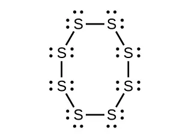
(b) Bent (120°), sp2
(c) Trigonal planar, sp2
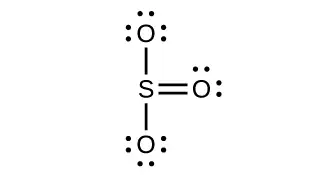
(d) Tetrahedral, sp3
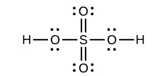
16. Two important industrial chemicals, ethene, C2H4, and propene, C3H6, are produced by the steam (or thermal) cracking process:
For each of the four carbon compounds, do the following:
(a) Draw a Lewis structure.
(b) Predict the geometry about the carbon atom.
(c) Determine the hybridization of each type of carbon atom.
17. Analysis of a compound indicates that it contains 77.55% Xe and 22.45% F by mass.
(a) What is the empirical formula for this compound? (Assume this is also the molecular formula in responding to the remaining parts of this exercise).
(b) Write a Lewis structure for the compound.
(c) Predict the shape of the molecules of the compound.
(d) What hybridization is consistent with the shape you predicted?
Answer
(a) XeF2
(b)
(c) linear (d) sp3d
18. Consider nitrous acid, HNO2 (HONO).
(a) Write a Lewis structure.
(b) What are the electron pair and molecular geometries of the internal oxygen and nitrogen atoms in the HNO2 molecule?
(c) What is the hybridization on the internal oxygen and nitrogen atoms in HNO2?
19. Strike-anywhere matches contain a layer of KClO3 and a layer of P4S3. The heat produced by the friction of striking the match causes these two compounds to react vigorously, which sets fire to the wooden stem of the match. KClO3 contains the \(\text{ClO}_{3}{}^{-}\) ion. P4S3 is an unusual molecule with the skeletal structure.
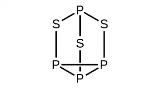
(a) Write Lewis structures for P4S3 and the \(\text{ClO}_{3}{}^{-}\) ion.
(b) Describe the geometry about the P atoms, the S atom, and the Cl atom in these species.
(c) Assign a hybridization to the P atoms, the S atom, and the Cl atom in these species.
(d) Determine the oxidation states and formal charge of the atoms in P4S3 and the \(\text{ClO}_{3}{}^{-}\) ion.
Answer
(a)
![Two Lewis structure are shown, the left of which depicts three phosphorus atoms single bonded together to form a triangle. Each phosphorus is bonded to a sulfur atom by a vertical single bond and each of those sulfur atoms is then bonded to a single phosphorus atom so that a six-sided ring is created with a sulfur in the middle. Each sulfur atom in this structure has two lone pairs of electrons while each phosphorus has one lone pair. The second Lewis structure shows a chlorate atom single bonded to two oxygen atoms, each of which has three lone pairs of electrons, and double bonded to an oxygen atom, which has two lone pairs of electrons.](img/cnx-chem-08-02-phsphorus2-img.webp)
(b) P atoms, trigonal pyramidal; S atoms, bent, with two lone pairs; Cl atoms, trigonal pyramidal; (c) Hybridization about P, S, and Cl is, in all cases, sp3; (d) Oxidation states P +1, S\(-1\frac{1}{3},\) Cl +5, O –2. Formal charges: P 0; S 0; Cl +2: O –1
20. Identify the hybridization of each carbon atom in the following molecule. (The arrangement of atoms is given; you need to determine how many bonds connect each pair of atoms.)
21. Write Lewis structures for NF3 and PF5. On the basis of hybrid orbitals, explain the fact that NF3, PF3, and PF5 are stable molecules, but NF5 does not exist.
Answer
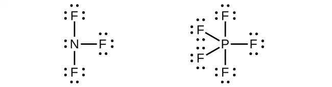
Phosphorus and nitrogen can form sp3 hybrids to form three bonds and hold one lone pair in PF3 and NF3, respectively. However, nitrogen has no valence d orbitals, so it cannot form a set of sp3d hybrid orbitals to bind five fluorine atoms in NF5. Phosphorus has d orbitals and can bind five fluorine atoms with sp3d hybrid orbitals in PF5.
22. In addition to NF3, two other fluoro derivatives of nitrogen are known: N2F4 and N2F2. What shapes do you predict for these two molecules? What is the hybridization for the nitrogen in each molecule?
8.3 Multiple Bonds¶
23. The bond energy of a C–C single bond averages 347 kJ mol−1; that of a \(\text{C}\equiv\text{C}\) triple bond averages 839 kJ mol−1. Explain why the triple bond is not three times as strong as a single bond.
Answer
A triple bond consists of one σ bond and two π bonds. A σ bond is stronger than a π bond due to greater overlap.
24. For the carbonate ion, \(\text{CO}_{3}{}^{2-},\) draw all of the resonance structures. Identify which orbitals overlap to create each bond.
25. A useful solvent that will dissolve salts as well as organic compounds is the compound acetonitrile, H3CCN. It is present in paint strippers.
(a) Write the Lewis structure for acetonitrile, and indicate the direction of the dipole moment in the molecule.
(b) Identify the hybrid orbitals used by the carbon atoms in the molecule to form σ bonds.
(c) Describe the atomic orbitals that form the π bonds in the molecule. Note that it is not necessary to hybridize the nitrogen atom.
Answer
(a)
(b) The terminal carbon atom uses sp3 hybrid orbitals, while the central carbon atom is sp hybridized. (c) Each of the two π bonds is formed by overlap of a 2p orbital on carbon and a nitrogen 2p orbital.
26. For the molecule allene, \(\text{H}_{2}\text{C}=\text{C}=\text{CH}_{2},\) give the hybridization of each carbon atom. Will the hydrogen atoms be in the same plane or perpendicular planes?
27. Identify the hybridization of the central atom in each of the following molecules and ions that contain multiple bonds:
(a) ClNO (N is the central atom)
(b) CS2
(c) Cl2CO (C is the central atom)
(d) Cl2SO (S is the central atom)
(e) SO2F2 (S is the central atom)
(f) XeO2F2 (Xe is the central atom)
(g) \(\text{ClOF}_{2}{}^{\text{+}}\) (Cl is the central atom)
Answer
(a) sp2; (b) sp; (c) sp2; (d) sp3; (e) sp3; (f) sp3d; (g) sp3
28. Describe the molecular geometry and hybridization of the N, P, or S atoms in each of the following compounds.
(a) H3PO4, phosphoric acid, used in cola soft drinks
(b) NH4NO3, ammonium nitrate, a fertilizer and explosive
(c) S2Cl2, disulfur dichloride, used in vulcanizing rubber
(d) K4[O3POPO3], potassium pyrophosphate, an ingredient in some toothpastes
29. For each of the following molecules, indicate the hybridization requested and whether or not the electrons will be delocalized:
(a) ozone (O3) central O hybridization
(b) carbon dioxide (CO2) central C hybridization
(c) nitrogen dioxide (NO2) central N hybridization
(d) phosphate ion \((\text{PO}_{4}{}^{3-})\) central P hybridization
Answer
(a) sp2, delocalized; (b) sp, localized; (c) sp2, delocalized; (d) sp3, delocalized
30. For each of the following structures, determine the hybridization requested and whether the electrons will be delocalized:
(a) Hybridization of each carbon
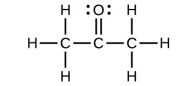
(b) Hybridization of sulfur
(c) All atoms
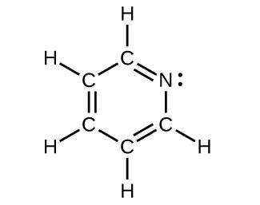
31. Draw the orbital diagram for carbon in CO2 showing how many carbon atom electrons are in each orbital.
Answer
![A diagram is shown in two parts, connected by a right facing arrow labeled, “Hybridization.” The left diagram shows an up-facing arrow labeled, “E.” To the lower right of the arrow is a short, horizontal line labeled, “2 s,” that has two vertical half-arrows facing up and down on it. To the upper right of the arrow are a series of three short, horizontal lines labeled, “2 p.” Above both sets of lines is the phrase, “Orbitals in an isolated C atom.” There are two upward facing arrows on two of these lines. The right side of the diagram shows two short, horizontal lines placed halfway up the space and each labeled, “s p.” An upward-facing half arrow is drawn vertically on each line. Above these lines are two other short, horizontal lines, each labeled, “2 p,” and which have two upward facing arrows on them. Above both sets of lines is the phrase, “Orbitals in the s p hybridized C in C O subscript 2.”](img/cnx-chem-08-02-co2diag.webp)
Each of the four electrons is in a separate orbital and overlaps with an electron on an oxygen atom.
8.4 Molecular Orbital Theory¶
32. Sketch the distribution of electron density in the bonding and antibonding molecular orbitals formed from two s orbitals and from two p orbitals.
33. How are the following similar, and how do they differ?
(a) σ molecular orbitals and π molecular orbitals
(b) ψ for an atomic orbital and ψ for a molecular orbital
(c) bonding orbitals and antibonding orbitals
Answer
(a) Similarities: Both are bonding orbitals that can contain a maximum of two electrons. Differences: σ orbitals are end-to-end combinations of atomic orbitals, whereas π orbitals are formed by side-by-side overlap of orbitals. (b) Similarities: Both are quantum-mechanical constructs that represent the probability of finding the electron about the atom or the molecule. Differences: ψ for an atomic orbital describes the behavior of only one electron at a time based on the atom. For a molecule, ψ represents a mathematical combination of atomic orbitals. (c) Similarities: Both are orbitals that can contain two electrons. Differences: Bonding orbitals result in holding two or more atoms together. Antibonding orbitals have the effect of destabilizing any bonding that has occurred.
34. If molecular orbitals are created by combining five atomic orbitals from atom A and five atomic orbitals from atom B combine, how many molecular orbitals will result?
35. Can a molecule with an odd number of electrons ever be diamagnetic? Explain why or why not.
Answer
An odd number of electrons can never be paired, regardless of the arrangement of the molecular orbitals. It will always be paramagnetic.
36. Can a molecule with an even number of electrons ever be paramagnetic? Explain why or why not.
37. Why are bonding molecular orbitals lower in energy than the parent atomic orbitals?
Answer
Bonding orbitals have electron density in close proximity to more than one nucleus. The interaction between the bonding positively charged nuclei and negatively charged electrons stabilizes the system.
38. Calculate the bond order for an ion with this configuration:
39. Explain why an electron in the bonding molecular orbital in the H2 molecule has a lower energy than an electron in the 1s atomic orbital of either of the separated hydrogen atoms.
Answer
The pairing of the two bonding electrons lowers the energy of the system relative to the energy of the nonbonded electrons.
40. Predict the valence electron molecular orbital configurations for the following, and state whether they will be stable or unstable ions.
(a) \(\text{Na}_{2}{}^{\text{2+}}\)
(b) \(\text{Mg}_{2}{}^{\text{2+}}\)
(c) \(\text{Al}_{2}{}^{\text{2+}}\)
(d) \(\text{Si}_{2}{}^{\text{2+}}\)
(e) \(\text{P}_{2}{}^{\text{2+}}\)
(f) \(\text{S}_{2}{}^{\text{2+}}\)
(g) \(\text{F}_{2}{}^{\text{2+}}\)
(h) \(\text{Ar}_{2}{}^{\text{2+}}\)
41. Determine the bond order of each member of the following groups, and determine which member of each group is predicted by the molecular orbital model to have the strongest bond.
(a) H2, \(\text{H}_{2}{}^{\text{+}},\) \(\text{H}_{2}{}^{-}\)
(b) O2, \(\text{O}_{2}{}^{\text{2+}},\) \(\text{O}_{2}{}^{\text{2−}}\)
(c) Li2, \(\text{Be}_{2}{}^{\text{+}},\) Be2
(d) F2, \(\text{F}_{2}{}^{\text{+}},\) \(\text{F}_{2}{}^{-}\)
(e) N2, \(\text{N}_{2}{}^{\text{+}},\) \(\text{N}_{2}{}^{-}\)
Answer
(a) H2 bond order = 1, \(\text{H}_{2}{}^{\text{+}}\) bond order = 0.5, \(\text{H}_{2}{}^{-}\) bond order = 0.5, strongest bond is H2; (b) O2 bond order = 2, \(\text{O}_{2}{}^{\text{2+}}\) bond order = 3; \(\text{O}_{2}{}^{\text{2−}}\) bond order = 1, strongest bond is \(\text{O}_{2}{}^{\text{2+}};\) (c) Li2 bond order = 1, \(\text{Be}_{2}{}^{\text{+}}\) bond order = 0.5, Be2 bond order = 0, strongest bond is \(\text{Li}_{2}\);(d) F2 bond order = 1, \(\text{F}_{2}{}^{\text{+}}\) bond order = 1.5, \(\text{F}_{2}{}^{-}\) bond order = 0.5, strongest bond is \(\text{F}_{2}{}^{\text{+}};\) (e) N2 bond order = 3, \(\text{N}_{2}{}^{\text{+}}\) bond order = 2.5, \(\text{N}_{2}{}^{-}\) bond order = 2.5, strongest bond is N2
42. For the first ionization energy for an N2 molecule, what molecular orbital is the electron removed from?
43. Compare the atomic and molecular orbital diagrams to identify the member of each of the following pairs that has the highest first ionization energy (the most tightly bound electron) in the gas phase:
(a) H and H2
(b) N and N2
(c) O and O2
(d) C and C2
(e) B and B2
Answer
(a) H2; (b) N2; (c) O; (d) C2; (e) B2
44. Which of the period 2 homonuclear diatomic molecules are predicted to be paramagnetic?
45. A friend tells you that the 2s orbital for fluorine starts off at a much lower energy than the 2s orbital for lithium, so the resulting σ2s molecular orbital in F2 is more stable than in Li2. Do you agree?
Answer
Yes, fluorine is a smaller atom than Li, so atoms in the 2s orbital are closer to the nucleus and more stable.
46. True or false: Boron contains 2s22p1 valence electrons, so only one p orbital is needed to form molecular orbitals.
47. What charge would be needed on F2 to generate an ion with a bond order of 2?
Answer
2+
48. Predict whether the MO diagram for S2 would show s-p mixing or not.
49. Explain why \(\text{N}_{2}{}^{\text{2+}}\) is diamagnetic, while \(\text{O}_{2}{}^{\text{4+}},\) which has the same number of valence electrons, is paramagnetic.
Answer
N2 has s-p mixing, so the π orbitals are the last filled in \(\text{N}_{2}{}^{\text{2+}}.\) O2 does not have s-p mixing, so the σp orbital fills before the π orbitals.
50. Using the MO diagrams, predict the bond order for the stronger bond in each pair:
(a) B2 or \(\text{B}_{2}{}^{\text{+}}\)
(b) F2 or \(\text{F}_{2}{}^{\text{+}}\)
(c) O2 or \(\text{O}_{2}{}^{\text{2+}}\)
(d) \(\text{C}_{2}{}^{\text{+}}\) or \(\text{C}_{2}{}^{-}\)
Adapted from Chemistry 2e by OpenStax, licensed under CC BY 4.0. Access the original for free at openstax.org. Changes: converted to the web reading format of The Open Book Project.
-
Note that orbitals may sometimes be drawn in an elongated “balloon” shape rather than in a more realistic “plump” shape in order to make the geometry easier to visualize. ↩